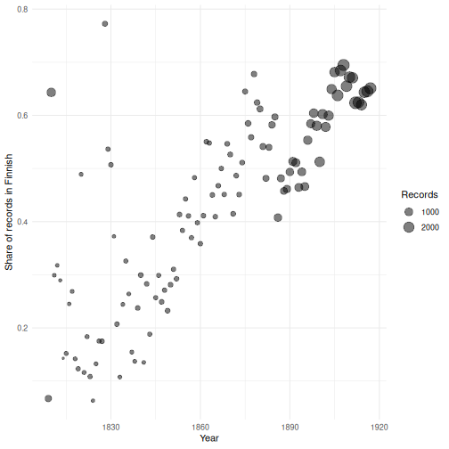

All in One View
Content from Introduction to the Course
Last updated on 2026-11-11 | Edit this page
Estimated time: 45 minutes
Overview
Questions
- What is bibliographic data, and what can we learn from it?
- How is a library catalogue record (MARC 21) structured?
- How do we clean raw records and make them ready for statistical research?
- Which R packages do we use, and how?
Objectives
- Explain what bibliographic data is and why it is useful for research.
- Recognise the basic structure of a MARC 21 record: fields, subfields and fixed-length codes.
- Describe the stages of the course: preprocessing, harmonisation, validation and analysis.
- Explain how a ready-made harmonisation package can be adapted to another bibliography (country, language, cataloguing practice).
- Set up an RStudio project and load the packages used in the course.
What is bibliographic data?
In this course we analyse Fennica, the Finnish national bibliography, using the programming language R. A national bibliography aims to describe everything published in a country. Each publication is described by a bibliographic record: who wrote it, what it is called, where, when and by whom it was published, in which language, how many pages it has, what it is about.
Taken one at a time, these records help readers find books. Taken together, tens of thousands of them become a dataset about the history of publishing: book history, language history and cultural history. We can ask how much was printed and where, which publishers dominated, which genres grew, and in which languages people read and wrote.
The running question
The whole course follows one research question:
How did the shift from Swedish to Finnish in publishing happen in 19th-century Finland, and how certain can we be about it?
In 1809 Finland became an autonomous Grand Duchy of the Russian Empire. Swedish was the language of administration, education and most printing; Latin was still used at the university. By 1917, when Finland became independent, most books were printed in Finnish. The bibliography lets us follow this shift year by year, place by place and publisher by publisher. But only if we understand how the data was made, and how far we can trust it.
Library records: MARC 21
Library catalogues store records in a format called MARC 21 (MAchine- Readable Cataloging). A MARC record consists of:
-
Control fields with a number below 010, for example
field
001(the record identifier) and field008, a fixed-length code in which every position has a meaning (the type of date, the year, the country, the language, …). -
Data fields with a three-digit number, for example
100(main author),245(title) or260(publication). Each data field is divided into subfields marked with a letter: in field 260,$ais the place,$bthe publisher and$cthe date.
A record for a book might look like this in the catalogue:
100 1# $a Runeberg, Johan Ludvig, $d 1804-1877.
245 10 $a Fänrik Ståls sägner : $b en sångcykel /
260 ## $a Helsingfors : $b G. W. Edlund, $c 1873.The punctuation at the end of each subfield (:,
,, /) is not part of the data: it is a
cataloguing rule that separates the subfields. The two characters after
the field number are indicators, which refine the
meaning of the field.
The fields we use most in this course are:
| MARC field | Content |
|---|---|
001 |
record identifier |
008 |
fixed-length codes: date type, years, language |
041 $a |
language code(s) |
100 $a, 100 $d
|
main author: name and years of life |
245 $a |
title |
260 $a, 260 $b
|
place of publication, publisher |
264 $a |
place of publication (newer cataloguing rules) |
300 $a |
extent (number of pages) |
A real record
Here is one real record from the raw data we use later in the course (see the Setup page for how to download it). Each MARC field has been put into its own column:
R
raw <- read_ipc_file("data/priority_fields19.feather")
raw |>
filter(id == "1001523") |>
select(id, field_008, author_name, author_date, language_041,
title, title_remainder, publication_place, publication_place_264,
physical_extent, note_500) |>
glimpse()
OUTPUT
Rows: 1
Columns: 11
$ id <chr> "1001523"
$ field_008 <chr> "930122s1860 fi |||| m |0| 0|swe| "
$ author_name <chr> "Schauman, Frans Ludvig,"
$ author_date <chr> "1810-1877,"
$ language_041 <chr> "swe"
$ title <chr> "Den finska kyrkans barndopsritual, historiskt o…
$ title_remainder <chr> "akademisk afhandling /"
$ publication_place <chr> NA
$ publication_place_264 <chr> "[Helsingfors] :|Helsingfors :"
$ physical_extent <chr> "81, XXV sivua ;"
$ note_500 <chr> "Tarkastuspäivämäärä: 8.2.1860."Challenge 1: Read a record
Look at the record above.
- Who is the author, and when did he live?
- In which language and where was the book published? In which field did you find the place, and which field is empty?
- Field 008 starts with
930122. The year of publication is also hidden in this field. Can you find it? - Which characters in the record are cataloguing punctuation rather than data?
- Frans Ludvig Schauman, 1810–1877 (
author_name,author_date). - Swedish (
swe), in Helsingfors (Helsinki). Field 260 (publication_place) is empty; the place is in field 264 (publication_place_264), once in square brackets (added by the cataloguer) and once as printed on the title page. -
930122is the date when the record was created (22 January 1993). Position 7 is the type of date (s= a single known date) and positions 8–11 are the year: 1860. - The final
:,,,/and;, and the square brackets.
From raw records to statistics
A catalogue is made for finding books, not for statistics. Before we can count and model, the records have to go through several stages, which also form the structure of this course:
| Part | What we do | Episodes |
|---|---|---|
| 1. Introduction | Bibliographic data, MARC 21 and the tools of the course | Introduction to the Course |
| 2. Data description | Load the Finnish national bibliography; see what it contains and what is missing | The Finnish National Bibliography |
| 3. Making the data ready for analysis | Cleaning (remove formal noise), harmonisation (one name for one thing), enrichment (add data from Finto and Finna) and validation (how far can we trust the result?) | Cleaning, Harmonisation, Enrichment, Validation |
| 4. Basic statistical analysis | Answer research questions with linear regression, the chi-squared test and other basic methods | Research Questions 1–3 |
| 5. Probabilistic analysis | Express how certain our answers are, given missing and uncertain data | Probabilistic Analysis |
We do all of this in R scripts, so that every step is documented and repeatable: when the library publishes a new export of the catalogue, or when we find an error, we fix the code and run it again.
Using a ready-made package, and adapting it
We don’t have to start from zero. The Fennica data was harmonised
with the R package fennica,
developed by the Computational History group. It contains one
polish_*() function per field
(polish_author(), polish_languages(),
polish_place(), polish_publisher(), …) and a
set of lookup tables, for example all known spellings
of Finnish towns.
Much of this work transfers to other bibliographies, but some of it is specific to one country, language and catalogue:
- Place names have different forms in different languages (Helsinki, Helsingfors, Helsingforsiae), and Finnish inflects them (Helsingissä, “in Helsinki”).
- Each library writes its own phrases for missing information (Kustannuspaikka tuntematon, “place of publication unknown”).
- Cataloguing practices change over time (fields 260 and 264), and each library has its own history of digitisation and record conversion.
In this course you learn to read and reuse such functions, and to adapt the rules and lookup tables when they don’t fit your data.
Challenge 2: Your own bibliography
Think of a bibliography or catalogue you know, for example the national bibliography of your own country. Discuss with your neighbour:
- In which languages, and in how many different forms, are place names and personal names written?
- Which information would you expect to be missing most often, and why?
- Which research question could you ask with it?
There is no single right answer. Typical points: multilingual countries have several names for the same town; older publications often lack a publisher or a precise date; anonymous and pseudonymous works lack a reliable author; and borders change, so “published in the country” can mean different things in different periods.
Why a programming language?
With tens of thousands of records, spreadsheets quickly become hard to manage. A programming language lets us:
- work with large datasets quickly,
- record every step of an analysis, so that it can be repeated and checked by others,
- combine data cleaning, statistics and visualisation in one place.
R is a free, open-source language designed for statistics and data analysis. RStudio is a program that makes working with R more comfortable.
Work in an RStudio project
Create a project for this course with File > New Project >
New Directory. A project keeps your scripts, data and results
together, and sets the working directory so that file
paths like data/my_file.feather work. Inside the project,
create a folder called data and put the course data there
(see the Setup page).
Packages
R’s abilities are extended by packages. In this course we use:
| Package | Used for |
|---|---|
| arrow | reading the data files (Feather format) |
| dplyr | selecting, filtering, transforming and summarising data |
| tidyr | reshaping data |
| stringr | working with text |
| stringi | text tools used by the fennica functions |
| ggplot2 | plots |
| jsonlite | reading data from web APIs |
You install a package once:
R
install.packages(c("arrow", "dplyr", "tidyr", "stringr", "stringi", "ggplot2", "jsonlite"))
and load it each time you start a new R session:
R
library(dplyr)
The fennica package is not installed from CRAN. We do not need to install it: we read its code on GitHub and reuse its lookup tables directly.
Getting help
-
?function_nameopens the help page for a function. - Error messages usually tell you what went wrong. Read them carefully, and try searching for the message online.
- Common errors are typos in object names, missing commas or parentheses, and forgetting to load a package.
- Bibliographic records, taken together, are a dataset about the history of publishing.
- MARC 21 records consist of numbered fields and lettered subfields; field 008 is a fixed-length code.
- Cataloguing punctuation and conventions must be removed or interpreted before analysis.
- The course moves from preprocessing and harmonisation through validation to analysis and modelling.
- Ready-made harmonisation code, such as the fennica package, can be reused, but its rules and lookup tables must be adapted to each bibliography.
- Work in an RStudio project and keep every step in a script, so your work is reproducible.
Content from Data Description: The Finnish National Bibliography
Last updated on 2026-11-11 | Edit this page
Estimated time: 30 minutes
Overview
Questions
- What is the Fennica bibliography and what does our dataset contain?
- How do I load a data file into R?
- How do I get an overview of a data frame?
Objectives
- Describe what a bibliographic record is and what the dataset covers.
- Load the Fennica data into R as a data frame.
- Inspect the size, columns and contents of a data frame.
- Measure how much data is missing in each column.
The Fennica bibliography
Fennica is the Finnish national bibliography, maintained by the National Library of Finland. It aims to record everything published in Finland, and publications about Finland or by Finnish authors published abroad.
Each publication is described by a bibliographic
record: a catalogue entry with fields such as the author,
title, year and place of publication, language and subject. Library
records are stored in a format called MARC, where fields are identified
by numbers. You will see some of these numbers in our column names, for
example author_name_100 (MARC field 100, the main author)
and genre_008 (MARC field 008, coded information).
Our dataset, harmonized_fennica19.feather, contains
72,626 records of publications from 1809 to
1917, the period when Finland was an autonomous Grand Duchy
within the Russian Empire. The data has been harmonised: some
fields have been cleaned and standardised for research. As we will see,
it still has plenty of quirks.
Loading the data
The data is stored in the Feather format, a fast
binary format for data frames, which we read with the arrow
package. Feather files are also called Arrow IPC files, so the function
is called read_ipc_file():
R
library(arrow)
library(dplyr)
fennica <- read_ipc_file("data/harmonized_fennica19.feather")
File paths
The path "data/harmonized_fennica19.feather" is
relative to your working directory, which is your project
folder. If R says the file does not exist, check that the file is in the
data folder inside your project and that you opened the
project (the .Rproj file).
A first look
fennica is a data frame (more precisely
a tibble, the tidyverse’s version of a data frame). It is a
table where each row is one record and each
column is one variable.
R
dim(fennica)
OUTPUT
[1] 72626 79R
nrow(fennica)
OUTPUT
[1] 72626R
ncol(fennica)
OUTPUT
[1] 79Typing the name of a tibble prints the first rows and as many columns as fit:
R
fennica
OUTPUT
# A tibble: 72,626 × 79
id id2 data_element genre_008 record_type biblio_level
<chr> <chr> <chr> <chr> <chr> <chr>
1 1001523 1001523|FCC005333271 Kirjat Tietokirj… Language m… Monograph/I…
2 1002166 1002166|FCC003328624 Kirjat Tietokirj… Language m… Monograph/I…
3 1003435 1003435|FCC000494839 Kirjat Tietokirj… Language m… Monograph/I…
4 1003442 1003442|FCC001769859 Kirjat Tietokirj… Language m… Monograph/I…
5 1004966 1004966|FCC000498589 Kirjat Tietokirj… Language m… Monograph/I…
6 1006834 1006834|FCC000450489 Kirjat Tietokirj… Language m… Monograph/I…
7 1015813 1015813|FCC001780036 Kirjat Tietokirj… Language m… Monograph/I…
8 1016174 1016174|FCC001780306 Kirjat Tietokirj… Language m… Monograph/I…
9 1016203 1016203|FCC003174449 Kirjat Tietokirj… Language m… Monograph/I…
10 1029041 1029041|FCC003174253 Kirjat Tietokirj… Language m… Monograph/I…
# ℹ 72,616 more rows
# ℹ 73 more variables: publication_status <chr>, author_name_100 <chr>,
# first_100 <chr>, last_100 <chr>, author_birth <dbl>, author_death <dbl>,
# author_age <dbl>, title <chr>, title_length <int>, title_word <int>,
# title_remainder <chr>, title_remainder_length <int>,
# title_remainder_word <int>, title2 <chr>, title2_length <int>,
# title2_word <int>, language_full_primary <chr>, …With 79 columns, glimpse() gives a more readable
overview: one line per column, showing its type and the first
values.
R
glimpse(fennica)
OUTPUT
Rows: 72,626
Columns: 79
$ id <chr> "1001523", "1002166", "1003435", "1003442", …
$ id2 <chr> "1001523|FCC005333271", "1002166|FCC00332862…
$ data_element <chr> "Kirjat", "Kirjat", "Kirjat", "Kirjat", "Kir…
$ genre_008 <chr> "Tietokirjallisuus", "Tietokirjallisuus", "T…
$ record_type <chr> "Language material", "Language material", "L…
$ biblio_level <chr> "Monograph/Item", "Monograph/Item", "Monogra…
$ publication_status <chr> "Single known date/probable date", "Single k…
$ author_name_100 <chr> "Schauman, Frans Ludvig", "Hällsten, Jakob",…
$ first_100 <chr> "Frans Ludvig", "Jakob", "Santeri", "Erik Al…
$ last_100 <chr> "Schauman, Frans Ludvig", "Hällsten, Jakob",…
$ author_birth <dbl> 1810, 1807, 1866, 1810, 1837, 1841, 1875, 18…
$ author_death <dbl> 1877, 1851, 1937, 1858, 1877, 1894, 1953, 19…
$ author_age <dbl> 67, 44, 71, 48, 40, 53, 78, 78, 68, 78, 68, …
$ title <chr> NA, NA, NA, NA, NA, NA, NA, NA, NA, NA, NA, …
$ title_length <int> NA, NA, NA, NA, NA, NA, NA, NA, NA, NA, NA, …
$ title_word <int> NA, NA, NA, NA, NA, NA, NA, NA, NA, NA, NA, …
$ title_remainder <chr> "den finska kyrkans barndopsritual, historis…
$ title_remainder_length <int> 69, 82, 56, 71, 40, 48, 46, 50, 45, 87, 91, …
$ title_remainder_word <int> 8, 11, 5, 12, 5, 7, 4, 5, 5, 10, 11, 10, 9, …
$ title2 <chr> "Na den finska kyrkans barndopsritual, hist…
$ title2_length <int> 73, 86, 60, 75, 44, 52, 50, 54, 49, 91, 95, …
$ title2_word <int> 9, 12, 6, 13, 6, 8, 5, 6, 6, 11, 12, 11, 10,…
$ language_full_primary <chr> "Unrecognized", "Latin", "Unrecognized", "Un…
$ language_full_multi <lgl> FALSE, FALSE, FALSE, FALSE, FALSE, FALSE, FA…
$ lang_full_orig <chr> "swe", "lat", "fin", "swe", "swe", "swe|fin"…
$ language_041_primary <chr> "Unrecognized", NA, "Unrecognized", "Unrecog…
$ language_041_multi <lgl> FALSE, NA, FALSE, FALSE, FALSE, FALSE, NA, N…
$ lang_041_orig <chr> "swe", "lat", "fin", "swe", "swe", "swe|fin"…
$ language_008_primary <chr> "Swedish", "Latin", "Finnish", "Swedish", "S…
$ language_008_multi <lgl> FALSE, FALSE, FALSE, FALSE, FALSE, FALSE, FA…
$ lang_008_orig <chr> "swe", "lat", "fin", "swe", "swe", "swe|fin"…
$ language_original_primary <chr> "Swedish", "Latin", "Finnish", "Swedish", "S…
$ language_original_multi <lgl> FALSE, FALSE, FALSE, FALSE, FALSE, TRUE, FAL…
$ lang_original_orig <chr> "swe", "lat", "fin", "swe", "swe", "swe|fin"…
$ publication_year_from <dbl> 1860, 1837, 1890, 1858, 1874, 1871, 1902, 19…
$ publication_year_till <dbl> NA, NA, NA, NA, NA, NA, NA, NA, NA, NA, NA, …
$ publication_year <dbl> 1860, 1837, 1890, 1858, 1874, 1871, 1902, 19…
$ publication_decade <dbl> 1860, 1830, 1890, 1850, 1870, 1870, 1900, 19…
$ publication_place <chr> NA, NA, NA, NA, NA, NA, NA, NA, NA, NA, NA, …
$ publication_country <chr> NA, NA, NA, NA, NA, NA, NA, NA, NA, NA, NA, …
$ publisher <chr> NA, NA, NA, NA, NA, NA, NA, NA, NA, NA, NA, …
$ signum <chr> "Diss. HY", "Diss. HY", "Suom. hist. 3 Ingma…
$ genre_655 <chr> NA, NA, NA, NA, NA, NA, NA, NA, NA, NA, NA, …
$ gatherings.original <fct> NA, NA, NA, NA, NA, NA, NA, NA, NA, NA, NA, …
$ width.original <dbl> NA, NA, NA, NA, NA, NA, NA, NA, NA, NA, NA, …
$ height.original <dbl> NA, NA, NA, NA, NA, NA, NA, NA, NA, NA, NA, …
$ obl.original <lgl> FALSE, FALSE, FALSE, FALSE, FALSE, FALSE, FA…
$ original <chr> "helsingfors tohelsingfors", "helsingforsiae…
$ gatherings <fct> NA, NA, NA, NA, NA, NA, NA, NA, NA, NA, NA, …
$ width <dbl> NA, NA, NA, NA, NA, NA, NA, NA, NA, NA, NA, …
$ height <dbl> NA, NA, NA, NA, NA, NA, NA, NA, NA, NA, NA, …
$ obl <dbl> 0, 0, 0, 0, 0, 0, 0, 0, 0, 0, 0, 0, 0, 0, 0,…
$ area <dbl> NA, NA, NA, NA, NA, NA, NA, NA, NA, NA, NA, …
$ pagecount.multiplier.x <dbl> 1, 1, 1, 1, 1, 1, 1, 1, 1, 1, 1, 1, 1, 1, 1,…
$ pagecount.squarebracket.x <dbl> 0, 0, 0, 0, 0, 0, 0, 0, 0, 0, 0, 0, 0, 0, 0,…
$ pagecount.plate.x <dbl> 0, 0, 0, 0, 0, 0, 0, 0, 0, 0, 0, 0, 0, 0, 0,…
$ pagecount.arabic.x <dbl> 0, 0, 0, 0, 0, 0, 0, 0, 0, 0, 0, 0, 0, 0, 0,…
$ pagecount.roman.x <dbl> 0, 0, 0, 0, 0, 0, 0, 0, 0, 0, 0, 0, 0, 0, 0,…
$ pagecount.sheet.x <dbl> 0, 0, 0, 0, 0, 0, 0, 0, 0, 0, 0, 0, 0, 0, 0,…
$ pagecount.x <dbl> NA, NA, NA, NA, NA, NA, NA, NA, NA, NA, NA, …
$ volnumber.x <dbl> NA, NA, NA, NA, NA, NA, NA, NA, NA, NA, NA, …
$ volcount.x <dbl> NA, NA, NA, NA, NA, NA, NA, NA, NA, NA, NA, …
$ parts.x <dbl> NA, NA, NA, NA, NA, NA, NA, NA, NA, NA, NA, …
$ pagecount.multiplier.y <dbl> 1, 1, 1, 1, 1, 1, 1, 1, 1, 1, 1, 1, 1, 1, 1,…
$ pagecount.squarebracket.y <dbl> 0, 0, 0, 0, 0, 0, 0, 0, 0, 0, 0, 0, 0, 0, 0,…
$ pagecount.plate.y <dbl> 0, 0, 0, 0, 0, 0, 0, 0, 0, 0, 0, 0, 0, 0, 0,…
$ pagecount.arabic.y <dbl> 0, 0, 0, 0, 0, 0, 0, 0, 0, 0, 0, 0, 0, 0, 0,…
$ pagecount.roman.y <dbl> 0, 0, 0, 0, 0, 0, 0, 0, 0, 0, 0, 0, 0, 0, 0,…
$ pagecount.sheet.y <dbl> 0, 0, 0, 0, 0, 0, 0, 0, 0, 0, 0, 0, 0, 0, 0,…
$ pagecount.y <dbl> NA, NA, NA, NA, NA, NA, NA, NA, NA, NA, NA, …
$ volnumber.y <dbl> NA, NA, NA, NA, NA, NA, NA, NA, NA, NA, NA, …
$ volcount.y <dbl> NA, NA, NA, NA, NA, NA, NA, NA, NA, NA, NA, …
$ parts.y <dbl> NA, NA, NA, NA, NA, NA, NA, NA, NA, NA, NA, …
$ udk_orig <chr> NA, NA, NA, NA, NA, NA, NA, NA, NA, NA, NA, …
$ udk_harm <chr> NA, NA, NA, NA, NA, NA, NA, NA, NA, NA, NA, …
$ udk_aux <chr> "25", "82", "948.0", "613", "55", "809.454.1…
$ udk <chr> NA, NA, NA, NA, NA, NA, NA, NA, NA, NA, NA, …
$ udk_primary <chr> NA, NA, NA, NA, NA, NA, NA, NA, NA, NA, NA, …
$ udk_multi <lgl> NA, NA, NA, NA, NA, NA, NA, NA, NA, NA, NA, …The most common column types are:
| Type | Meaning | Example column |
|---|---|---|
<chr> |
character (text) | author_name_100 |
<dbl> |
double (number) | publication_year |
<int> |
integer (whole number) | title_remainder_word |
<lgl> |
logical (TRUE/FALSE) |
language_008_multi |
Working with single columns
We pull out one column as a vector with $:
R
head(fennica$publication_year)
OUTPUT
[1] 1860 1837 1890 1858 1874 1871R
range(fennica$publication_year, na.rm = TRUE)
OUTPUT
[1] 1809 1917table() counts how often each value occurs, which is
handy for categorical columns:
R
table(fennica$data_element)
OUTPUT
Jatkuvat julkaisut Kirjat
7320 65306 Kirjat means books and
Jatkuvat julkaisut means serials (newspapers,
magazines and other continuing publications). Some columns use Finnish
labels because they come from Finnish cataloguing practice.
summary() gives a quick statistical overview of a
numeric column:
R
summary(fennica$author_birth)
OUTPUT
Min. 1st Qu. Median Mean 3rd Qu. Max. NAs
354 1819 1853 1837 1868 1941 41287 How complete is the data?
Bibliographic records are rarely complete. is.na() tells
us which values are missing, and colMeans() computes the
share of TRUE values per column. Here we look at a few key
columns:
R
key_columns <- c("author_name_100", "author_birth", "title_remainder",
"publication_year", "language_008_primary", "publisher",
"publication_place", "genre_008")
round(colMeans(is.na(fennica[key_columns])) * 100)
OUTPUT
author_name_100 author_birth title_remainder
38 57 0
publication_year language_008_primary publisher
0 0 30
publication_place genre_008
37 0 More than a third of the records have no author. This is not necessarily an error: many publications, such as official documents, almanacs and serials, have no personal author. Missing data can carry meaning, and it shapes which questions we can answer.
Challenge 1: Explore a column
Use table() to look at the column
language_008_primary. Which are the three most common
languages?
Hint: sort(..., decreasing = TRUE) sorts a table from
largest to smallest.
R
sort(table(fennica$language_008_primary), decreasing = TRUE)[1:5]
OUTPUT
Finnish Swedish Latin German Russian
40378 23338 2844 2357 938 Finnish, Swedish and Latin. Note how many Swedish-language publications there are: Swedish was the main language of administration and education for much of the 19th century.
Challenge 2: Suspicious values
Look at the first values of the columns publisher and
publication_place:
R
head(unique(fennica$publisher), 10)
head(unique(fennica$publication_place), 10)
Does anything look strange?
R
head(unique(fennica$publisher), 10)
OUTPUT
[1] NA "wiipurissa"
[3] "helsingfors" "turku"
[5] "åbo" "turussa"
[7] "kustannuspaikka tuntematon" "stockholm"
[9] "turusa" "kuopiossa" R
head(unique(fennica$publication_place), 10)
OUTPUT
[1] NA "F cederwaller" "Stycket" "Första delen"
[5] "Nen osa" "Första boken" "Andra boken" "Fjerde boken"
[9] "Osa" "Part" The publisher column contains places
(helsinki, helsingfors…), while publication_place contains
publishers (WSOY, Otava…). The two columns appear to
have been swapped somewhere in the processing. We come back to this in
the episode on validation. Always check that your data contains what the
column names promise!
- Fennica is the Finnish national bibliography; our data covers 1809–1917.
- Each row of the data frame is one bibliographic record, each column one variable.
- Use
read_ipc_file()fromarrowto read Feather files. -
dim(),glimpse(),summary()andtable()give a quick overview of the data. - Check how much data is missing, and whether columns contain what their names suggest.
Content from Cleaning: From Raw Records to Tidy Text
Last updated on 2026-11-11 | Edit this page
Estimated time: 65 minutes
Overview
Questions
- What do raw bibliographic records look like, and how do we get to know an unfamiliar export?
- What is “formal noise” in catalogue data, and how do we remove it?
- How does the fennica R package clean bibliographic records, and how can we reuse its approach?
Objectives
- Profile a raw dataset: unique values, missing values and the most common forms.
- Clean text fields with regular expressions (
grepl(),gsub(),sub()). - Recognise the different ways in which a catalogue says “unknown”.
- Clean personal names with
polish_author()from the fennica package, and check its result on difficult names. - Write each cleaning step as a function, and apply it to unique values only.
- Read a cleaning function from the fennica package and judge which parts fit another bibliography.
Making the data ready for analysis
Throughout this course we follow one research question:
How did the shift from Swedish to Finnish in publishing happen in 19th-century Finland, and how certain can we be about it?
To study it we need, for every publication, at least its language, its place of publication, its publisher and its author. None of these exists as a clean variable in the library catalogue. The next four episodes make the data ready for analysis, in four steps:
| Step | Question | Episode |
|---|---|---|
| Cleaning | Is the text free of formal noise? | this episode |
| Harmonisation | Does one thing have one name? | Harmonisation |
| Enrichment | What can other sources add? | Enrichment |
| Validation | How far can we trust the result? | Validation |
In this episode we only clean: we remove what is not part of the data (cataloguing punctuation, brackets, extra spaces) and turn the many ways of saying “unknown” into missing values. We do not yet decide that Helsingfors and Helsinki are the same town; that is harmonisation.
Data has a history
A catalogue record is not the book itself but a description of it, made by a cataloguer, often a century or more after printing, following cataloguing rules that have changed over time. The record was then edited, digitised, exported and processed. Each step can add variation (many spellings of the same name), missing values (unknown publisher) or errors. Keep asking: what process produced this value? The answer decides how we clean it, and later, how certain our conclusions can be.
The fennica package
The Fennica data has already been cleaned and harmonised once, with
the R package fennica.
It has one polish_*() function per field, for example polish_publisher(),
polish_place(), polish_author() and
polish_languages(), and a set of lookup tables in the
folder inst/extdata.
We do not install the package. Instead, we build simplified versions of its functions step by step, so that we understand every decision, and we read the real functions to see how the project solved the same problems. This is also how you would adapt the package to another bibliography.
A first look at the raw records
The file priority_fields19.feather contains the raw
catalogue records of all Fennica publications from 1809 to 1917,
exported from the National Library of Finland’s catalogue. Only the most
important (priority) MARC fields are included.
R
raw <- read_ipc_file("data/priority_fields19.feather")
dim(raw)
OUTPUT
[1] 72626 60R
names(raw)
OUTPUT
[1] "id" "fikka_id" "leader"
[4] "field_008" "other_system_id" "author_name"
[7] "author_date" "language_work" "asteri_id"
[10] "language_041" "language_original" "title_uniform"
[13] "title" "title_remainder" "title_part_number"
[16] "publication_place" "publisher" "publication_place_264"
[19] "physical_dimensions" "physical_extent" "publication_frequency"
[22] "publication_dates" "UDC" "UDC_aux"
[25] "classification_084" "genre_655" "genre_655_source"
[28] "subject_650" "note_500" "content_type_336"
[31] "contents_505" "summary_520" "variant_title_246"
[34] "title_uniform_130" "title2" "type_of_record"
[37] "bibliographic_level" "Date_entered" "publication_status"
[40] "publication_time" "field_008_33" "data_element_008"
[43] "converted_008_33" "language_008" "location_a"
[46] "institution_code" "sublocation" "shelving_location"
[49] "address" "coded_location" "noncoded_location"
[52] "url" "call_number" "item_part"
[55] "shelving_control" "call_number_prefix" "call_number_suffix"
[58] "piece_designation" "nonpublic_note" "public_note" The columns have readable names, but each one comes from a MARC field: a three-digit field number and a subfield letter. The ones we use are:
| Column | MARC field | Content |
|---|---|---|
id |
001 | record identifier |
field_008 |
008 | fixed-length coded data (dates, language, …) |
author_name |
100a | main author: name |
author_date |
100d | main author: years of life |
asteri_id |
100 (authority link) | main author: identifier in the authority file |
language_041 |
041a | language code(s) |
language_008 |
008/35–37 | language code inside field 008 |
publication_place |
260a | place of publication |
publisher |
260b | publisher |
publication_place_264 |
264a | place of publication (newer rules) |
physical_extent |
300a | number of pages, or type of resource |
We keep only these columns, with short names:
R
records <- raw |>
select(id, field_008,
author = author_name, author_date, asteri_id,
language_041, language_008,
place_260 = publication_place, place_264 = publication_place_264,
publisher, extent = physical_extent)
Profiling: how messy is each column?
Before cleaning anything we want an overview: how many different values does each column have, and how much is missing? We write a function for it, because we will use it again and again:
R
is_blank <- function(x) is.na(x) | str_trim(x) == ""
profile <- function(data) {
data |>
summarise(across(everything(), list(
n_unique = \(x) n_distinct(x[!is_blank(x)]),
pct_missing = \(x) round(100 * mean(is_blank(x)), 1)
))) |>
pivot_longer(everything(),
names_to = c("column", ".value"),
names_pattern = "(.*)_(n_unique|pct_missing)")
}
profile(records)
OUTPUT
# A tibble: 11 × 3
column n_unique pct_missing
<chr> <int> <dbl>
1 id 72626 0
2 field_008 51019 0
3 author 11103 37.5
4 author_date 3758 56.7
5 asteri_id 4692 52.4
6 language_041 241 1.8
7 language_008 42 0.8
8 place_260 1299 28.7
9 place_264 1272 73.2
10 publisher 9889 29.3
11 extent 17080 9.1across() applies the two summaries to every column, and
pivot_longer() turns the one-row result into one row per
column. (\(x) is a short way of writing
function(x).) We will also often need the number of unique,
non-missing values of a single column:
R
n_unique <- function(x) n_distinct(x[!is_blank(x)])
n_unique(records$place_260)
OUTPUT
[1] 1299A few numbers stand out already:
- 1,299 different places of publication, although Finland had only a few dozen printing towns;
- 9,889 different publishers;
- 241 different “languages”;
- about a third of the records have no author, and almost a third have no place in field 260.
Regular expressions: a quick reference
We clean text with regular expressions (regex), small patterns that describe text:
-
grepl(pattern, x): does each value contain the pattern? (TRUE/FALSE) -
sub(pattern, replacement, x): replace the first match;gsub()replaces all matches.
| Pattern | Meaning | Example | Matches |
|---|---|---|---|
^ / $
|
start / end of the text | ^Hels |
“Helsinki” |
. |
any character | H.lsinki |
“Helsinki”, “Hälsinki” |
[abc] |
one of these characters | [,.:] |
a comma, full stop or colon |
\\s |
a space | \\s*: |
“:”, ” :“,” :” |
+ / *
|
one or more / zero or more | [,.]+$ |
“,”, “.,” at the end |
a\|b |
a or b | Turku\|Åbo |
“Turku” or “Åbo” |
( ) and \\1
|
capture a group, and reuse it | ^([0-9]{4})-.* |
“1818-1898” → “1818” |
\\b |
word boundary | \\bförf\\b |
“förf”, not “förfat” |
Characters such as [ ] . | ( ) have special meanings; to
match them literally, escape them (\\[, \\.)
or put them inside brackets ([|]).
R
places <- c("Helsinki :", "[Helsinki] :", "Turku,", "Helsingfors :")
gsub("\\s*[:,]$", "", places) # remove a final colon or comma
OUTPUT
[1] "Helsinki" "[Helsinki]" "Turku" "Helsingfors"R
gsub("\\[|\\]", "", places) # remove square brackets
OUTPUT
[1] "Helsinki :" "Helsinki :" "Turku," "Helsingfors :"Formal noise: punctuation and brackets
R
records |> count(place_260, sort = TRUE) |> head(15)
OUTPUT
# A tibble: 15 × 2
place_260 n
<chr> <int>
1 <NA> 20812
2 Helsinki : 13566
3 Helsingfors : 11025
4 Porvoo : 2580
5 Tampere : 2176
6 Kuopio : 1417
7 Turku : 1367
8 Hämeenlinna : 1113
9 [Kustannuspaikka tuntematon] : 1067
10 Jyväskylä : 924
11 Stockholm : 917
12 Åbo : 875
13 [S.l.] : 692
14 Aboae : 619
15 Pori : 616Two kinds of problems are mixed here. Some are formal noise, which is not part of the data:
- cataloguing punctuation (
Helsinki :): it separates MARC subfields; - square brackets (
[Helsinki] :): the place is not printed in the book but was added by the cataloguer; - extra spaces and differences in upper and lower case.
Others are real variation in the names: Helsingfors is the Swedish name of Helsinki, and Helsingissä means “in Helsinki”. We leave those for the next episode. A cleaning function removes only the formal noise:
R
clean_place_text <- function(x) {
x <- sub("[|].*", "", x) # keep the first place
x <- gsub("\\[|\\]|\"", "", x) # brackets and quotes
x <- gsub("\\s*[:;,.]+\\s*$", "", x) # final punctuation
x <- str_squish(x) # extra spaces
tolower(x)
}
place_text <- clean_place_text(records$place_260)
n_unique(records$place_260)
OUTPUT
[1] 1299R
n_unique(place_text)
OUTPUT
[1] 897Cleaning alone removes a large part of the apparent variation.
Challenge 1: Brackets carry information
Square brackets mean that the cataloguer added the
place: it is not printed in the book. What share of the non-missing
places in field 260 are in brackets? Our clean_place_text()
removes the brackets. What do we lose, and how could we keep that
information?
R
has_place <- !is_blank(records$place_260)
mean(grepl("^\\[", records$place_260[has_place]))
OUTPUT
[1] 0.06598603About 7% of the places were added by a cataloguer. They are usually right, but they are an inference, not a fact printed in the book. Removing the brackets silently throws that difference away. A good solution is to keep it in a separate variable before cleaning:
R
place_inferred <- grepl("^\\[", records$place_260)
Cleaning should never remove information we may need later; if in doubt, store it in a new column.
Many ways to say “unknown”
A catalogue rarely leaves a field empty when the information is unknown. It writes a phrase instead:
R
tibble(place = place_text) |>
filter(grepl("tuntematon|^s\\.? ?l$", place)) |>
count(place, sort = TRUE) |>
head(6)
OUTPUT
# A tibble: 6 × 2
place n
<chr> <int>
1 kustannuspaikka tuntematon 1103
2 kustantaja tuntematon 7
3 s.l 4
4 helsinki kustantaja tuntematon 2
5 kristinestad? : kustantaja tuntematon 2
6 kustannuspaikka tuntematon : ohion, pennsylvanian ja west virginian suo… 2Kustannuspaikka tuntematon is Finnish for “place of
publication unknown”, kustantaja tuntematon for “publisher
unknown”, and s.l. (sine loco) and s.n.
(sine nomine) are the Latin equivalents. For statistics, they
are all missing values, and they must become
NA. Otherwise “kustannuspaikka tuntematon” would appear as
one of the largest publishing places in Finland!
R
is_unknown <- function(x) {
grepl("^(kustannuspaikka|kustantaja) tuntematon$|^s\\.? ?[ln]$", x)
}
place_text[is_unknown(place_text)] <- NA
sum(is.na(place_text))
OUTPUT
[1] 21928Challenge 2: Why ^ and
$?
The pattern in is_unknown() starts with ^
and ends with $, so it only matches values that are
nothing but an unknown phrase. Find the values of
clean_place_text(records$place_260) that contain
“tuntematon” but are not caught by is_unknown(). What would
have happened if we had simply used
grepl("tuntematon", x)?
R
all_places <- clean_place_text(records$place_260)
all_places[grepl("tuntematon", all_places) & !is_unknown(all_places)] |>
table() |>
sort(decreasing = TRUE) |>
head(5)
OUTPUT
helsinki kustantaja tuntematon
2
käkisalmi : kustantaja tuntematon
2
kristinestad? : kustantaja tuntematon
2
kustannuspaikka tuntematon : ohion, pennsylvanian ja west virginian suomalainen raittiusliitto
2
ekenäs kustantaja tuntematon
1 In these records the place and the publisher ended
up in the same subfield: “helsinki kustantaja tuntematon” means
“Helsinki, publisher unknown”. The place is known! A pattern without
^ and $ would have deleted it. Anchoring makes
a rule stricter, and a strict rule is easier to trust.
Publisher
The same cleaning works for the publisher. One extra rule removes the word distr. or jakaja (“distributor”):
R
clean_publisher_text <- function(x) {
x <- clean_place_text(x)
gsub(",? *(i )?(distr\\.?|jakaja)$", "", x)
}
publisher_text <- clean_publisher_text(records$publisher)
n_unique(records$publisher)
OUTPUT
[1] 9889R
n_unique(publisher_text)
OUTPUT
[1] 8305The real polish_publisher()
contains dozens of rules like ours, for example:
R
x <- gsub("\\bförfattaren\\b|\\bförfattare\\b|\\bförf\\b|\\btekijät\\b",
"tekijä", x, perl = TRUE)
x <- gsub("\\bsöderstörm\\b", "söderström", x, perl = TRUE) # a typo
\\b is a word boundary: it makes sure
that \\bförf\\b matches the abbreviation förf, but
not the start of a longer word:
R
words <- c("förf", "förf.", "förfat", "en förf")
grepl("förf", words)
OUTPUT
[1] TRUE TRUE TRUE TRUER
grepl("\\bförf\\b", words)
OUTPUT
[1] TRUE TRUE FALSE TRUEAuthor names
The main author is in MARC field 100, subfield $a,
written in inverted form: surname, first names. Let’s look at
the most common values:
R
records |> count(author, sort = TRUE) |> head(8)
OUTPUT
# A tibble: 8 × 2
author n
<chr> <int>
1 <NA> 27270
2 Topelius, Zacharias, 711
3 Runeberg, Johan Ludvig, 483
4 Sjöström, Axel Gabriel, 326
5 Luther, Martti, 259
6 Aho, Juhani, 207
7 Rein, Gabriel, 153
8 Sahlberg, Carolus Reginaldus, 138Cataloguing punctuation
Every name ends with cataloguing punctuation, and not always the same one:
R
table(str_sub(records$author, -1)) |> sort(decreasing = TRUE) |> head(4)
OUTPUT
, . n i
33406 11893 10 8 Most names end with a comma (field 100 continues with the years of
life in subfield $d), others with a full stop. As a result,
the same person appears several times:
R
records |>
filter(grepl("^Benedix, Julius", author)) |>
count(author)
OUTPUT
# A tibble: 3 × 2
author n
<chr> <int>
1 Benedix, Julius Roderich, 1
2 Benedix, Julius Roderich. 12
3 Benedix, Julius Roderich., 1Brackets and parentheses
A few names contain a second form of the name in brackets or parentheses:
R
records |>
filter(grepl("[][()]", author)) |>
count(author)
OUTPUT
# A tibble: 8 × 2
author n
<chr> <int>
1 A[sup ***]. 1
2 Heikel, Fredrik Hjalmar (Jalmari). 1
3 Krüger, Stephanus Johannes Paulus (Paul). 1
4 Ridge, John James [Jaakko]. 1
5 Siltala (Silfvenius), A. J. 1
6 Stenwall, Hanna [Kiwi]. 1
7 Tollstadius, Erik [Eerikki]. 1
8 [Engelberg, G.]. 1Look at them carefully. Stenwall, Hanna [Kiwi],
Tollstadius, Erik [Eerikki] and Heikel, Fredrik Hjalmar
(Jalmari) add the Finnish form of a Swedish name:
these authors used both. That is exactly the kind of detail our running
question is about, so we keep it in its own column before we remove it
from the name. str_match() returns the part of the text
inside the parentheses ( ) of the pattern:
R
other_name <- str_match(records$author, "\\s[\\[(]([^])]*)[])]")[, 2]
table(other_name)
OUTPUT
other_name
Eerikki Jaakko Jalmari Kiwi Paul Silfvenius
1 1 1 1 1 1 One name is different: in [Engelberg, G.] the whole name is in brackets. As with places, this means the name is not printed in the book: the cataloguer identified the author. Here we remove only the brackets.
Transliterated names
Names from Russian are transliterated from the Cyrillic alphabet:
R
records |>
filter(grepl("\"", author)) |>
count(author)
OUTPUT
# A tibble: 6 × 2
author n
<chr> <int>
1 "Buslaev\", F̀. I." 1
2 "Fedorov\", F. A." 1
3 "Gogol', Nikolaj Vasil'evič\"." 1
4 "Granstrem\", È," 2
5 "Kaulbars\", N." 1
6 "Kaulbars\", Nikolai," 1The " after Fedorov or Kaulbars stands
for the Russian “hard sign” (ъ), which the old Russian spelling wrote at
the end of many words. It is not part of the name in Finnish or Swedish
texts, so we remove it.
The fennica function: polish_author()
The fennica package has a function for exactly this job: polish_author().
We do not need to install the whole package to use it. An R function is
just code, and source() can run code directly from GitHub.
polish_author() uses five small helper functions from the
package, so we load those too:
R
fennica_code <- paste0("https://raw.githubusercontent.com/fennicahub/fennica/",
"e1c7bbd7337b84d3acc9d890ed843a80b0f14fba/R/")
for (f in c("polish_author", "pick_firstname", "pick_lastname",
"capitalize", "condense_spaces", "clean_name_col")) {
source(paste0(fennica_code, f, ".R"))
}
The long code in the address is a commit: one fixed
version of the package. If the package changes later, our results stay
the same. This is an important habit for reproducible research: always
know which version of someone else’s code you used.
(polish_author() also needs the package
stringi; install it with
install.packages("stringi") if you don’t have it.)
Let’s try it on the names we have seen:
R
examples <- c("Benedix, Julius Roderich.,", "Runeberg, Johan Ludvig,",
"Setälä, E. N.,", "Kaulbars\", Nikolai,",
"Stenwall, Hanna [Kiwi].")
polish_author(examples)
OUTPUT
full_name first last
1 Benedix, Julius Roderich Julius Roderich Benedix
2 Runeberg, Johan Ludvig Johan Ludvig Runeberg
3 Setälä, E N E N Setälä
4 Kaulbars", Nikolai Nikolai Kaulbars"
5 Stenwall, Hanna [kiwi] Hanna [kiwi] Stenwallpolish_author() returns a data frame with three columns:
the full name and, separately, the last and
first names. Reading its code on GitHub, we can see the
steps:
- convert to lower case, and work on unique values only;
- remove final commas, digits and (meant to remove) brackets;
- split the name into last and first name: at the comma if there is one, otherwise at the last space;
- capitalise each word, and replace full stops with spaces
(
E. N.→E N); - glue the parts together again as last, first.
Now on all records:
R
polished <- polish_author(records$author)
n_unique(records$author)
OUTPUT
[1] 11103R
n_unique(polished$full_name)
OUTPUT
[1] 10475Checking what the function did
A ready-made function is a set of decisions made by someone else, for their data. Before we trust it, we look at what it does to our data. Some harder cases:
R
harder <- c("Thomas Ragvaldinpoika,", "K. H. T.", "Larin-Kyösti,",
"Åkerman, Anna", "Daniel Henkikäsi, numero 3.",
"Lindroth, Hjalmar,|1878-1947,")
tibble(raw = harder, polished = polish_author(harder)$full_name)
OUTPUT
# A tibble: 6 × 2
raw polished
<chr> <chr>
1 Thomas Ragvaldinpoika, Ragvaldinpoika, Thomas
2 K. H. T. T, K
3 Larin-Kyösti, Larin-kyösti
4 Åkerman, Anna åkerman, Anna
5 Daniel Henkikäsi, numero 3. Daniel Henkikäsi, Numero
6 Lindroth, Hjalmar,|1878-1947, Lindroth, Hjalmar,|- Each line shows a decision that does not fit every name:
- Thomas Ragvaldinpoika is a patronymic (“son of Ragvald”), an older Nordic naming practice: there is no surname. The rule “the last word is the surname” turns it into Ragvaldinpoika, Thomas.
- K. H. T. is a signature, not a name, and is split as if it were one.
- Larin-Kyösti is a pseudonym; capitalising “each word” lower-cases the part after the hyphen.
- Åkerman stays in lower case: the capitalisation only knows the letters a–z, not å, ä and ö.
- Removing all digits changes numero 3 (part of a pseudonym) and leaves a dash behind from the years of life in Lindroth.
- The brackets in Stenwall, Hanna [Kiwi] above were not
removed: inside
[ ], R’s regular expressions do not treat\\as an escape character, so the pattern in the function does not match brackets. The pattern"[][()?]"would.
None of this makes the function useless: for the large majority of names it does exactly the right thing. But it shows what a cleaning function really is: rules that fit most of the data. Our job is to find the cases they don’t fit, and to decide whether to change the rules, add exceptions, or flag the records.
Challenge 3: Names that start in lower case
After polish_author(), a name should start with a
capital letter. Count the polished names that start with a
lower-case letter. Which letters are they? How would
you fix the problem: in the function, or after it?
R
polished |>
filter(grepl("^[[:lower:]]", full_name)) |>
count(first_letter = str_sub(full_name, 1, 1), sort = TRUE)
OUTPUT
first_letter n
1 å 139
2 ö 128
3 ä 18
4 š 8
5 á 1
6 ż 1R
polished |>
filter(grepl("^[[:lower:]]", full_name)) |>
count(full_name, sort = TRUE) |>
head(5)
OUTPUT
full_name n
1 öhquist, Johannes 33
2 åberg, Johan Olof 31
3 åström, N 24
4 åberg, J O 21
5 åkerblom, Rudolf 12Almost all of them are Swedish and Finnish names starting with Å, Ö
or Ä, plus a few names with letters from other alphabets (š, á, ż). The
clean fix is in the function: capitalize() loops over
letters, the 26 letters of the English alphabet. Using
toupper() on the first character, which knows all letters,
fixes it for every language. Fixing it in the function
helps everyone who uses the package; fixing it after the function only
helps us. This is how open-source tools improve: users find a case that
does not fit, and report or fix it.
Challenge 4: Names that are not names
An author name in field 100 normally has the form surname, first
names. Find the raw author names (after removing the final
punctuation) that contain no comma. What are they? What
does polish_author() do with them, and what should be done
with them?
R
no_comma <- records |>
mutate(author = str_squish(gsub("[,.]+$", "", author))) |>
filter(!is_blank(author), !grepl(",", author)) |>
count(author, sort = TRUE) |>
head(8)
no_comma |>
mutate(polished = polish_author(author)$full_name)
OUTPUT
# A tibble: 8 × 3
author n polished
<chr> <int> <chr>
1 Larin-Kyösti 80 Larin-kyösti
2 Aina 79 Aina
3 Thomas Ragvaldinpoika 78 Ragvaldinpoika, Thomas
4 Maria 71 Maria
5 Kauppis-Heikki 35 Kauppis-heikki
6 Parus Ater 25 Ater, Parus
7 Catharina Johanneksentytär 20 Johanneksentytär, Catharina
8 Suonio 19 Suonio Several different things are hidden here:
-
pseudonyms: Larin-Kyösti (Karl Gustaf
Larson), Suonio (Julius Krohn), Kauppis-Heikki (Heikki
Kauppinen), and Parus Ater (Latin for “coal tit”), which
polish_author()turns into Ater, Parus; - patronymics without a surname: Thomas Ragvaldinpoika (“son of Ragvald”), Catharina Johanneksentytär (“daughter of Johannes”);
- single first names, such as Aina and Maria, and initials with which authors signed their books.
Patronymics are real names and should be kept as they are: reversing
them into “surname, first name” is wrong. Pseudonyms and initials cannot
be turned into persons with a regular expression. We can only
flag these records, for example with a variable
author_no_surname, and leave the identification to
authority data and research. Other differences, such as Setälä, E.
N. and Setälä, Emil Nestor, are not formal noise either:
merging them is harmonisation, the topic of the next
episode.
A second, simpler version
The Fennica project’s harmonised data already contains the output of
polish_author(). To be able to check it in
the episode on validation, we also write a deliberately simple cleaning
function of our own. It removes only formal noise, and keeps the name
order as the cataloguer wrote it:
R
clean_author <- function(x) {
x <- gsub("\"", "", x) # transliterated hard sign
x <- gsub("\\s+[\\[(][^])]*[])]", "", x) # other forms: [Kiwi], (Jalmari)
x <- gsub("^\\[(.*)\\][.,]*$", "\\1", x) # whole name added by the cataloguer
x <- gsub("[,.]+$", "", x) # final punctuation
str_squish(x) # extra spaces
}
clean_author(c("Benedix, Julius Roderich.,", "Stenwall, Hanna [Kiwi].",
"[Engelberg, G.].", "Thomas Ragvaldinpoika,"))
OUTPUT
[1] "Benedix, Julius Roderich" "Stenwall, Hanna"
[3] "Engelberg, G" "Thomas Ragvaldinpoika" R
author <- clean_author(records$author)
n_unique(author)
OUTPUT
[1] 10507The order of the steps matters: the inner brackets go first, so that a name entirely in brackets is not deleted. Two independent versions of the same variable are a powerful check: wherever they disagree, at least one of them is wrong.
Applying a function to unique values only
Our cleaning functions look at every record, but there are only 9,889
different publisher values for 72,626 records. The fennica functions
therefore clean each unique value once and map the
result back to all records with match(). We can write this
pattern as a general helper:
R
map_unique <- function(x, f, ...) {
values <- unique(x)
f(values, ...)[match(x, values)]
}
publisher_text <- map_unique(records$publisher, clean_publisher_text)
The result is identical, but for slow functions (and millions of records) the difference in speed is enormous.
Challenge 5: Reuse or rewrite?
Open polish_publisher()
on GitHub. Find two rules that would work for any bibliography, and two
that only make sense for Fennica. What would you change to use the
function on the national bibliography of another country?
There is no single right answer. Rules that remove punctuation, brackets and extra spaces are general. Rules that recognise Finnish and Swedish words (tekijä, förf, tuntematon), fix typos in specific publisher names, or merge the names of Finnish publishing houses are specific to Fennica. To reuse the function, keep the general steps, move the language- and country-specific words into a lookup table, and replace that table for the new bibliography.
Keep the cleaning in a script
Save the cleaning functions in one script and run it from the raw
data every time. Never edit the raw data by hand. Our version is here:
clean_records.R. The
next episode starts from it.
- Start with a profile of the data: unique values, missing values and the most common forms.
- Cleaning removes formal noise (punctuation, brackets, spaces); harmonisation, in the next episode, merges real variants.
- Catalogues have many ways of saying “unknown”; turn them into
NA, with strict, anchored patterns. - Cleaning should not destroy information: keep things like “added by the cataloguer” or an alternative name form in a separate column.
- A ready-made function such as
polish_author()is a set of rules that fit most of the data: check what it does to yours, and load a fixed version (commit) of it. - Some values, such as patronymics, initials and pseudonyms, do not fit the rules; keep or flag them instead.
- Write each cleaning step as a function, and apply slow functions to unique values only.
- The fennica package can be reused, but its language- and country-specific rules must be adapted.
Content from Harmonisation: One Name for One Thing
Last updated on 2026-11-11 | Edit this page
Estimated time: 60 minutes
Overview
Questions
- How do we turn cleaned catalogue fields into consistent variables we can analyse?
- How do we combine information from several MARC fields?
- How can harmonisation be written as reusable, reproducible code?
Objectives
- Harmonise codes and name variants with lookup tables and
match(). - Combine information from several MARC fields with
coalesce(), and recognise when a field measures something else than you think. - Use authority identifiers to tell persons apart.
- Collect all steps into one pipeline function that runs from the raw data.
Getting started
In the previous episode we cleaned the records: the text is free of punctuation and brackets, and “unknown” phrases are recognised. But Helsingfors and Helsinki are still two different values, and a language code is not yet a language. Harmonisation gives one thing one name.
If you are starting a new R session, download clean_records.R into your
project folder and run it. It loads the raw records and defines the
cleaning functions:
R
source("clean_records.R")
1. Language
R
records |> count(language_041, sort = TRUE) |> head(12)
OUTPUT
# A tibble: 12 × 2
language_041 n
<chr> <int>
1 fin 37707
2 swe 22270
3 lat 2506
4 ger 2283
5 fin|swe 1740
6 <NA> 1330
7 rus 848
8 fre 702
9 eng 452
10 swe|fin 252
11 swe|lat 203
12 dan 157The values are three-letter MARC language codes
(fin Finnish, swe Swedish, lat
Latin, ger German, …). Several languages are joined with
|, which is why there are so many “languages”. How many
records are multilingual, and how many have no code at all?
R
sum(grepl("|", records$language_041, fixed = TRUE))
OUTPUT
[1] 3843R
sum(is_blank(records$language_041))
OUTPUT
[1] 1330fixed = TRUE treats | as plain text rather
than as “or”. We keep the first code, the primary
language:
R
primary_041 <- sub("[|].*", "", records$language_041)
n_unique(records$language_041)
OUTPUT
[1] 241R
n_unique(primary_041)
OUTPUT
[1] 40A second source: field 008
The language is recorded twice in a MARC record: in field 041 and inside the fixed-length field 008 (positions 36–38). Two independent records of the same thing are valuable: we can fill gaps, and we can check one against the other.
R
mean(primary_041 == records$language_008, na.rm = TRUE)
OUTPUT
[1] 0.9958904R
records |>
mutate(primary_041 = primary_041) |>
filter(primary_041 != language_008) |>
count(primary_041, language_008, sort = TRUE) |>
head(6)
OUTPUT
# A tibble: 6 × 3
primary_041 language_008 n
<chr> <chr> <int>
1 fin "mul" 192
2 swe "fin" 22
3 fin "swe" 21
4 swe "mul" 12
5 fin " " 6
6 gem "mul" 6The two agree for more than 99.5% of the records. Most disagreements
are books that 041 calls Finnish and 008 calls mul
(multiple languages). And the records without field 041?
R
records |>
filter(is_blank(language_041)) |>
count(language_008, sort = TRUE) |>
head(6)
OUTPUT
# A tibble: 6 × 2
language_008 n
<chr> <int>
1 " " 568
2 "swe" 326
3 "fin" 318
4 "lat" 38
5 "|||" 34
6 "rus" 25For about half of them, field 008 has a language code; the rest are
blank (" ") or not coded (|||). Notice also
that more of the recovered records are Swedish than Finnish: a gap in
one field is not spread evenly over the languages. We use 041 when it
exists and 008 otherwise. coalesce() from dplyr takes the
first non-missing value. Codes like ||| (“not coded”),
und (“undetermined”) and blanks are not languages, so we
make them NA:
R
language_code <- coalesce(primary_041, records$language_008)
language_code[language_code %in% c("|||", "und") | is_blank(language_code)] <- NA
sum(is.na(language_code))
OUTPUT
[1] 617From codes to names with a lookup table
To translate codes into names we use a lookup table:
the file language_abbreviations.csv from the fennica
package. match(x, table) returns, for each value of
x, its position in table:
R
language_table <- read.csv("data/language_abbreviations.csv", sep = "\t")
head(language_table, 3)
OUTPUT
synonyme name comment
1 aar Afar NA
2 abk Abkhaz NA
3 ace Achinese NAR
language <- language_table$name[match(language_code, language_table$synonyme)]
sort(table(language), decreasing = TRUE)[1:6]
OUTPUT
language
Finnish Swedish Latin German Russian French
40581 23352 2844 2355 937 732 A lookup table is easier to read, check and extend than a long chain
of gsub() calls. It is also data, which
can be shared and corrected independently of the code.
Writing it as a function
We will want to repeat these steps on new exports of the catalogue, so we collect them into a function:
R
harmonise_language <- function(code_041, code_008, lookup) {
code <- coalesce(sub("[|].*", "", code_041), code_008)
code[code %in% c("|||", "und") | is_blank(code)] <- NA
lookup$name[match(code, lookup$synonyme)]
}
language <- harmonise_language(records$language_041, records$language_008,
language_table)
Challenge 1: Bilingual publications
Make a logical variable multilingual that is
TRUE when field 041 has more than one language code. Which
language combinations are the most common among the multilingual
records? What would you lose for the running question if you kept only
the primary language?
R
multilingual <- grepl("|", records$language_041, fixed = TRUE)
sum(multilingual)
OUTPUT
[1] 3843R
records |>
filter(multilingual) |>
count(language_041, sort = TRUE) |>
head(5)
OUTPUT
# A tibble: 5 × 2
language_041 n
<chr> <int>
1 fin|swe 1740
2 swe|fin 252
3 swe|lat 203
4 fin|ger 146
5 fin|eng 122Finnish–Swedish publications (both orders) are by far the most
common. They are exactly the books where the language shift becomes
visible: official announcements and textbooks printed in both languages.
Keeping only the primary language turns them into “Finnish” or “Swedish”
depending on which was listed first. That is why we keep
multilingual as a separate variable.
2. Place of publication
After cleaning, the place names are free of punctuation, but the same town still has many names. How many ways are there to write Helsinki?
R
place_text <- clean_place_text(records$place_260)
helsinki_like <- grep("^(hels|gels)", place_text, value = TRUE)
n_unique(helsinki_like)
OUTPUT
[1] 36R
head(sort(table(helsinki_like), decreasing = TRUE), 10)
OUTPUT
helsinki_like
helsinki helsingfors helsingissä helsingforsiae gelsingfors
14105 11556 520 10 6
helsingissä hki helsingfros helsingis helsigfors helsingborg
5 4 4 3 3 grep(..., value = TRUE) returns the matching values
themselves. There are different languages
(Helsingfors in Swedish, Gel’singfors in Russian),
inflected forms (Helsingissä, “in Helsinki”)
and also Helsingborg, a town in Sweden: always
look at what a pattern matches before trusting it.
Harmonising names with a synonym table
Merging the variants (Helsingfors → Helsinki, Åbo → Turku, …) with
one grepl() line per town would never end. The fennica
package keeps a synonym table,
PublicationPlaceSynonymes.csv, with known spellings
(synonyme) and the standard name (name),
collected over years of work:
R
place_synonyms <- read.csv("data/PublicationPlaceSynonymes.csv", sep = ";")
nrow(place_synonyms)
OUTPUT
[1] 9921R
place_synonyms |> filter(name == "Helsinki") |> nrow()
OUTPUT
[1] 85R
place_synonyms |> filter(name == "Turku") |> pull(synonyme) |> head(15)
OUTPUT
[1] "aabo" "aàbo" "abae"
[4] "a bl" "a bo" "abo"
[7] "aboa" "aboae" "aboae abo"
[10] "aboae abo finland" "aboae fennorum" "aboae finland"
[13] "aboae finnorum" "aboae ime" "aboae impensis autoris"Many entries are written without special characters
(abo, borga), because the fennica pipeline
replaces å, ä and ö before the lookup. We do the same with
chartr(), which replaces characters one by one, and look up
both the original and the simplified form:
R
fold <- function(x) chartr("åäöüé", "aaoue", x)
lookup_place <- function(x, synonyms) {
position <- coalesce(match(x, synonyms$synonyme),
match(fold(x), synonyms$synonyme))
synonyms$name[position]
}
place <- map_unique(place_text, lookup_place, place_synonyms)
n_unique(place_text)
OUTPUT
[1] 897R
n_unique(place)
OUTPUT
[1] 375R
sort(table(place), decreasing = TRUE)[1:10]
OUTPUT
place
Helsinki Porvoo Turku Tampere Kuopio Hämeenlinna
26305 3254 3086 2461 1488 1261
Vyborg Stockholm Jyväskylä Vaasa
1156 1046 1003 744 One lookup merges hundreds of variants. Which frequent values were not found?
R
tibble(place_text, place) |>
filter(is.na(place), !is.na(place_text)) |>
count(place_text, sort = TRUE) |>
head(8)
OUTPUT
# A tibble: 8 × 2
place_text n
<chr> <int>
1 kustannuspaikka tuntematon 1103
2 s.l. 692
3 s.-peterburg 210
4 hancock (mich.) 187
5 gel'singfors 112
6 fitchburg (mass.) 109
7 brooklyn (n.y.) 53
8 duluth (minn.) 51First the “unknown place” phrases, which should be missing values
anyway. Then Russian transliterations (s.-peterburg,
gel'singfors) and towns in the United States such as
Hancock, Michigan, where Finnish emigrants ran their own printing
presses. A synonym table is never finished: when you find missing
entries like these, you add rows to the table, not code.
A second place field: 264
Almost a third of the records have no field 260. Newer cataloguing rules (RDA) record the place in field 264 instead:
R
sum(is_blank(records$place_260))
OUTPUT
[1] 20812R
sum(is_blank(records$place_260) & !is_blank(records$place_264))
OUTPUT
[1] 19424So we can fill most of the gaps from 264, just like we filled the language from 008:
R
place_combined <- map_unique(
clean_place_text(coalesce(records$place_260, records$place_264)),
lookup_place, place_synonyms)
sort(table(place_combined), decreasing = TRUE)[1:6]
OUTPUT
place_combined
Helsinki Mikkeli Turku Porvoo Tampere Kuopio
31496 8895 3936 3900 2734 1636 Challenge 2: A surprising printing centre
After adding field 264, Mikkeli, a small town in
eastern Finland, suddenly becomes one of the largest publishing places
in the country. Is that plausible? Look at the raw records of these
publications: their place_264, extent and
field_008. What is going on, and how should we handle these
records?
Hint: in field 008, position 7 is the type of date, and positions 8–11 the first date.
R
from_mikkeli <- is_blank(records$place_260) & grepl("Mikkeli", records$place_264)
sum(from_mikkeli)
OUTPUT
[1] 8673R
records |>
filter(from_mikkeli) |>
count(online = grepl("verkkoaineisto", extent),
date_type = substr(field_008, 7, 7),
sort = TRUE) |>
head(4)
OUTPUT
# A tibble: 4 × 3
online date_type n
<lgl> <chr> <int>
1 TRUE r 8637
2 FALSE s 19
3 TRUE d 11
4 FALSE d 3R
records |>
filter(from_mikkeli, grepl("verkkoaineisto", extent)) |>
transmute(place_264, extent, date_type = substr(field_008, 7, 7),
date1 = substr(field_008, 8, 11), date2 = substr(field_008, 12, 15)) |>
head(4)
OUTPUT
# A tibble: 4 × 5
place_264 extent date_type date1 date2
<chr> <chr> <chr> <chr> <chr>
1 Mikkeli :|[Mikkeli] :|Jyväskylä : 1 verkkoaineisto c 1917 9999
2 Savonlinna :|[Mikkeli] :|Jyväskylä : 1 verkkoaineisto c 1917 9999
3 [Mikkeli] : 1 verkkoaineisto (… r 2010 1861
4 Mikkeli : 1 verkkoaineisto d 1888 1892 Almost all of them have the extent verkkoaineisto (“online
resource”) and the date type r (reproduction): the first
date is in the 2010s or 2020s, and the second date is the original
19th-century year. These records describe digitised
copies. The National Library of Finland’s digitisation centre
is in Mikkeli, so field 264 gives the place of
digitisation, not of printing! The 19th-century place
of publication is simply not recorded. The honest value is
NA:
R
digitised_copy <- from_mikkeli & grepl("verkkoaineisto", records$extent)
place_combined[digitised_copy] <- NA
sort(table(place_combined), decreasing = TRUE)[1:6]
OUTPUT
place_combined
Helsinki Turku Porvoo Tampere Kuopio Vyborg
31495 3936 3900 2734 1636 1472 Field 260 also has a few hundred books really printed in Mikkeli; they are not affected, because they have a field 260.
This is the most important lesson of the episode: a field can be perfectly clean and still measure something else than you think.
We put the place steps together in one function:
R
harmonise_place <- function(place_260, place_264, extent, synonyms) {
digitised_copy <- is_blank(place_260) & grepl("Mikkeli", place_264) &
grepl("verkkoaineisto", extent)
place_264[digitised_copy] <- NA
map_unique(clean_place_text(coalesce(place_260, place_264)),
lookup_place, synonyms)
}
place <- harmonise_place(records$place_260, records$place_264,
records$extent, place_synonyms)
3. Publisher
After cleaning, the publisher names still have many variants. Look at one large publisher, Werner Söderström (today WSOY):
R
records |>
filter(grepl("Söderström|WSOY", publisher)) |>
count(publisher = clean_publisher_text(publisher), sort = TRUE) |>
head(8)
OUTPUT
# A tibble: 8 × 2
publisher n
<chr> <int>
1 wsoy 2451
2 söderström 1058
3 werner söderström 142
4 söderström & c:o 67
5 g. l. söderström 22
6 w. söderström 12
7 söderström & co 7
8 söderström ja k 6There is no synonym table for publishers, so we merge the largest ones with rules. Tekijä and förf. (“the author”) mean that the author published the book:
R
harmonise_publisher <- function(x) {
x <- clean_publisher_text(x)
case_when(
grepl("tuntematon|^s\\.? ?n$", x) ~ NA,
grepl("^(tekijä|tekijät|förf|författare|författaren)$", x) ~ "Self-published",
grepl("söderström|wsoy", x) ~ "WSOY",
grepl("otava", x) ~ "Otava",
grepl("edlund", x) ~ "Edlund",
grepl("^(suomalaisen kirjallisuuden seura|sks)\\b", x) ~ "SKS",
grepl("frenckell", x) ~ "Frenckell",
.default = str_to_title(x)
)
}
publisher <- map_unique(records$publisher, harmonise_publisher)
n_unique(records$publisher)
OUTPUT
[1] 9889R
n_unique(publisher)
OUTPUT
[1] 8159R
sort(table(publisher), decreasing = TRUE)[1:8]
OUTPUT
publisher
WSOY Self-published Edlund Otava
3787 2096 2006 1951
Frenckell SKS Karisto Raittiuden Ystävät
1166 800 560 427 case_when() tests the conditions in order and uses the
first one that is TRUE; .default is used when
none is.
When to stop?
Thousands of publisher names remain, most of them small printing houses that appear once or twice. A good rule: harmonise what affects your research question, usually the frequent values, and document what you left as it is.
4. Author
Name strings are not persons
Cleaning removed the punctuation from the names, but it cannot tell us who a name refers to. Look at the Runebergs:
R
records |>
filter(grepl("^Runeberg", author)) |>
count(author, asteri_id)
OUTPUT
# A tibble: 10 × 3
author asteri_id n
<chr> <chr> <int>
1 Runeberg, Birger, <NA> 2
2 Runeberg, Carolina, 000119432 2
3 Runeberg, Efraim Otto, 000095244 1
4 Runeberg, Fredrika, 000057304 5
5 Runeberg, J. L. <NA> 5
6 Runeberg, Johan Ludvig, 000057305 483
7 Runeberg, Johan Wilhelm, 000086231 17
8 Runeberg, Lorenzo, 000114079 2
9 Runeberg, Nino, 000057307 16
10 Runeberg, Robert, 000114080 2The column asteri_id is the person’s identifier in
Asteri, the Finnish national authority file. It tells
us that Johan Ludvig (the national poet), Johan
Wilhelm (his son), Fredrika (his wife) and Nino
are different people. It also shows a limit:
Runeberg, J. L. has no identifier, so nothing in the data
says for certain that it is the poet.
The identifier also separates people who share the same name:
R
records |>
filter(grepl("^Dumas, Alexandre", author)) |>
count(author = clean_author(author), asteri_id, author_date)
OUTPUT
# A tibble: 4 × 4
author asteri_id author_date n
<chr> <chr> <chr> <int>
1 Dumas, Alexandre 000041746 1824-1895, 1
2 Dumas, Alexandre 000041747 1802-1870, 12
3 Dumas, Alexandre 000041747 1802-1870. 27
4 Dumas, Alexandre <NA> <NA> 2Alexandre Dumas the father (1802–1870, The Three Musketeers) and the son (1824–1895, The Lady of the Camellias) have exactly the same name string. When an identifier exists, it is the better way to count persons:
R
author <- clean_author(records$author)
has_id <- !is.na(records$asteri_id)
mean(has_id)
OUTPUT
[1] 0.4757112R
n_unique(author[has_id])
OUTPUT
[1] 4668R
n_unique(records$asteri_id[has_id])
OUTPUT
[1] 4692Among the records that have an identifier, there are slightly more persons than name strings: identical names hide different people. For the other half of the records we only have the string. In the episode on enrichment we look at how external authority data can help.
Challenge 3: Anonymous books
About a third of the records have no author. Use records
and the language variable to calculate the share of records
without an author for each of the five most common
languages. Is a missing author equally likely in every language? Why
might that matter for the running question?
R
records |>
mutate(language = language, no_author = is_blank(author)) |>
filter(language %in% c("Finnish", "Swedish", "Latin", "German", "Russian")) |>
group_by(language) |>
summarise(records = n(), pct_no_author = round(100 * mean(no_author), 1))
OUTPUT
# A tibble: 5 × 3
language records pct_no_author
<chr> <int> <dbl>
1 Finnish 40581 38.5
2 German 2355 11.6
3 Latin 2844 10.9
4 Russian 937 42.3
5 Swedish 23352 42.2Latin and German publications (often academic dissertations) almost always have an author; Finnish, Swedish and Russian ones much less often (official publications, hymn books, almanacs, popular prints). If we analysed only records with a known author, we would look at a selected part of the bibliography. We come back to this in the episode on validation.
Putting it together: a reproducible pipeline
We now have one function per field. A final function applies them all and returns one analysis-ready table:
R
harmonise_records <- function(records, language_table, place_synonyms) {
records |>
transmute(
id,
author = clean_author(author),
author_id = asteri_id,
language = harmonise_language(language_041, language_008, language_table),
multilingual = grepl("|", language_041, fixed = TRUE),
place = harmonise_place(place_260, place_264, extent, place_synonyms),
publisher = map_unique(publisher, harmonise_publisher)
)
}
fennica_ours <- harmonise_records(records, language_table, place_synonyms)
glimpse(fennica_ours)
OUTPUT
Rows: 72,626
Columns: 7
$ id <chr> "1001523", "1002166", "1003435", "1003442", "1004966", "1…
$ author <chr> "Schauman, Frans Ludvig", "Hällsten, Jakob", "Ingman, San…
$ author_id <chr> "000106938", NA, "000091801", "000096656", "000162696", "…
$ language <chr> "Swedish", "Latin", "Finnish", "Swedish", "Swedish", "Swe…
$ multilingual <lgl> FALSE, FALSE, FALSE, FALSE, FALSE, TRUE, FALSE, FALSE, FA…
$ place <chr> "Helsinki", "Helsinki", "Helsinki", "Helsinki", "Helsinki…
$ publisher <chr> NA, NA, NA, NA, NA, NA, NA, NA, NA, NA, NA, NA, NA, NA, N…How much did cleaning and harmonisation reduce the variation?
R
tibble(
field = c("author", "language", "place", "publisher"),
raw = c(n_unique(records$author), n_unique(records$language_041),
n_unique(records$place_260), n_unique(records$publisher)),
harmonised = c(n_unique(fennica_ours$author), n_unique(fennica_ours$language),
n_unique(fennica_ours$place), n_unique(fennica_ours$publisher))
)
OUTPUT
# A tibble: 4 × 3
field raw harmonised
<chr> <int> <int>
1 author 11103 10507
2 language 241 39
3 place 1299 395
4 publisher 9889 8159Language and place became much tidier; author and publisher improved less, because much of their variation is real (there really were thousands of authors and printers), and the rest needs external knowledge such as authority files.
Keep the pipeline in a script
Save all the functions in one script, for example
harmonise_fennica.R, and run it from the raw data every
time. When the library publishes a new export, or when you find a new
problem (like Mikkeli), you fix the script and rerun it, and every
result downstream is updated. Our version, with the cleaning functions
included, is here: harmonise_fennica.R.
We save the result for the next episodes:
R
write_ipc_file(fennica_ours, "data/fennica_ours.feather")
- Harmonisation gives one thing one name: one code for one language, one name for one town.
- Lookup and synonym tables translate codes and merge variants; they are data that can be shared and corrected.
- The same information is often recorded in several MARC fields (041
and 008, 260 and 264); combine them with
coalesce(), but check what each field really records. - A clean value can still measure the wrong thing: for digitised copies, field 264 gives the place of digitisation.
- Name strings are not persons; authority identifiers are needed to tell people apart.
- Write each step as a function and run the whole pipeline from the raw data.
Content from Enrichment: Linking Records to Finto and Finna
Last updated on 2026-11-11 | Edit this page
Estimated time: 45 minutes
Overview
Questions
- What can external sources add to bibliographic records?
- How do we query an open API from R?
- How do identifiers make it possible to link datasets?
Objectives
- Explain the difference between harmonising data and enriching it.
- Describe the Finnish services Finto (vocabularies and authority data) and Finna (library, archive and museum collections).
- Query a REST API from R and turn the JSON response into a data frame.
- Link records to external data through identifiers rather than name strings.
In preparation
This episode is being developed. The outline and the code sketches below show the planned content; the code is not run when the lesson is built.
From harmonisation to enrichment
Harmonisation works inside the data: it gives one thing one name. Enrichment adds information from outside: the gender and birthplace of an author, the coordinates of a town, the subject of a book. For the running question this opens new angles: did Finnish-language publishing grow among new authors, in new places, or in new subjects?
Enrichment is only as good as the link between the
datasets. Linking by name strings is risky (remember the two Alexandre
Dumas). Linking by identifiers is much safer, and the
Fennica records already contain one: asteri_id, the
identifier of the author in the national authority file.
Finto: vocabularies and authority data
Finto is the Finnish thesaurus and ontology service, maintained by the National Library of Finland. It publishes, among others:
| Vocabulary | Content | Use for Fennica |
|---|---|---|
finaf |
Finnish national authority file (Asteri): persons and organisations | author dates, other name forms |
yso |
General Finnish ontology: subject terms in Finnish, Swedish and English | subjects of publications |
yso-paikat |
Place names | standard place names, links to other sources |
Finto has an open REST API: a web address that returns data instead of a web page. For example, searching the authority file for Dumas:
R
library(jsonlite)
url <- "https://api.finto.fi/rest/v1/search?vocab=finaf&query=Dumas*&lang=fi"
result <- fromJSON(url)
result$results[, c("localname", "prefLabel")]
The localname of each person is the same identifier as
asteri_id in our records. Here the identifier
000041747 is Alexandre Dumas the father, and the authority
record gives his years of life (1802–1870) even for records in which the
cataloguer did not write them.
Finna: collections of libraries, archives and museums
Finna brings together the collections of Finnish libraries, archives and museums. Its API can be used to find, for example, digitised copies, other editions or images related to a publication:
R
url <- paste0("https://api.finna.fi/v1/search?lookfor=Runeberg",
"&type=Author&limit=5&field[]=title&field[]=year")
finna <- fromJSON(url)
finna$records
Planned content
- Enrich authors with data from the authority file (years of life,
other name forms) through
asteri_id. - Link place names to
yso-paikatand add coordinates, for maps of publishing. - Link records to digitised copies in Finna.
- Good practice: query each identifier only once, save the results to a file, and respect the services’ usage limits.
- How much did enrichment add, and for which records? (Enrichment can itself be uneven across languages.)
Challenge 1: Search Finto
Open finto.fi in your browser and search the YSO ontology for a subject that interests you, for example runot (poems). Which labels does the concept have in Finnish, Swedish and English? Why are multilingual labels useful for a bilingual bibliography?
Each YSO concept has a preferred label in Finnish, Swedish and English (for example runot – dikter – poems). Because the concept is the same, Finnish- and Swedish-language publications on the same subject can be compared directly, which helps to answer whether the language shift was the same in all subjects.
- Enrichment adds information from external sources; harmonisation works inside the data.
- Finto provides vocabularies and authority data; Finna provides access to the collections of Finnish memory institutions.
- Open REST APIs return data (often JSON) that R can read with
jsonlite::fromJSON(). - Link datasets through identifiers, such as the Asteri identifier, rather than through name strings.
Content from Validation: How Far Can We Trust the Harmonised Data?
Last updated on 2026-11-11 | Edit this page
Estimated time: 70 minutes
Overview
Questions
- How do we check that a harmonisation did what we intended?
- How do we compare two harmonisations of the same records?
- When do data problems change the answer to a research question?
Objectives
- Write validation rules as code and collect the results in a report.
- Compare our harmonisation with the Fennica project’s version, field by field.
- Use disagreements to find errors in both versions.
- Show that missing values in bibliographic data are not random.
- Test how sensitive a result is to cleaning and selection decisions.
Why validate?
In the cleaning and harmonisation episodes we built our own harmonised variables: language, place, publisher and author. Every step was a decision, and some decisions will be wrong for some records. Validation means checking, systematically and with code, how good the result is. We use three kinds of checks:
- Rules: conditions that every value should meet (“a place name has no punctuation left”).
- Comparison: an independent harmonisation of the same records, here the one made by the Fennica project.
- Consequences: do the remaining problems change the answer to our question, how did the shift from Swedish to Finnish happen?
We start where the harmonisation episode ended. If you don’t have
records and fennica_ours in your session any
more, download harmonise_fennica.R
into your project folder and run it:
R
source("harmonise_fennica.R")
We also load the Fennica project’s harmonised data:
R
fennica <- read_ipc_file("data/harmonized_fennica19.feather")
1. Validation rules
A validation rule is a logical test that should be TRUE
for every record. It’s useful to write them so that they return the
records that fail, and then count them. A small helper
function makes a one-row report for each rule:
R
check <- function(rule, failing) {
tibble(rule = rule, n_failing = sum(failing, na.rm = TRUE))
}
check("author has no digits", grepl("[0-9]", fennica_ours$author))
OUTPUT
# A tibble: 1 × 2
rule n_failing
<chr> <int>
1 author has no digits 16We collect many rules into one report with
bind_rows():
R
validation_report <- bind_rows(
check("id is unique",
duplicated(fennica_ours$id)),
check("language is a known language name",
!is.na(fennica_ours$language) &
!fennica_ours$language %in% language_table$name),
check("author has no digits",
grepl("[0-9]", fennica_ours$author)),
check("author has no brackets",
grepl("[][()]", fennica_ours$author)),
check("author has no final punctuation",
grepl("[,.;:]$", fennica_ours$author)),
check("publisher is longer than three characters",
nchar(fennica_ours$publisher) <= 3)
)
validation_report
OUTPUT
# A tibble: 6 × 2
rule n_failing
<chr> <int>
1 id is unique 0
2 language is a known language name 0
3 author has no digits 16
4 author has no brackets 1
5 author has no final punctuation 0
6 publisher is longer than three characters 1057Some rules pass, others don’t. Let’s look at the failures:
R
fennica_ours |>
filter(grepl("[0-9]|[][()]", author)) |>
count(author, sort = TRUE) |>
head(8)
OUTPUT
# A tibble: 8 × 2
author n
<chr> <int>
1 Daniel Henkikäsi, numero 3 5
2 Lindroth, Hjalmar,|1878-1947 2
3 1. 2. 3 1
4 10. 11. 12 1
5 13. 14. 15 1
6 16. 17. 18 1
7 4. 5. 6 1
8 7. 8. 9 1Each failure is a different kind of problem.
Daniel Henkikäsi, numero 3 is a pseudonym, and the number
really is part of it. In Lindroth, Hjalmar,|1878-1947 the
years of life ended up in the name field: our
clean_author() should keep only the part before
|. And 1. 2. 3 is not a name at all. When a
validation rule fails, we go back to the raw
record:
R
raw |>
filter(grepl("^[0-9]+\\. [0-9]+\\. [0-9]+", author_name)) |>
select(id, author_name, title)
OUTPUT
# A tibble: 6 × 3
id author_name title
<chr> <chr> <chr>
1 3796398 1. 2. 3. Ett rim efter omständigheterna /
2 3796409 4. 5. 6. Ett rim efter omständigheterna /
3 3796415 7. 8. 9. Ett rim efter omständigheterna /
4 3796416 10. 11. 12. Ett rim efter omständigheterna /
5 3796419 13. 14. 15. Ett rim efter omständigheterna /
6 3796421 16. 17. 18. Ett rim efter omständigheterna /Six records of the same title, Ett rim efter
omständigheterna, have numbers in the author field: probably parts
or verses that were catalogued separately. This cannot be fixed with a
rule; it is a case for a correction list (a table of
ids and corrected values), which the pipeline applies after
the automatic steps.
The short publishers are even more interesting:
R
fennica_ours |>
filter(nchar(publisher) <= 3) |>
count(publisher, sort = TRUE)
OUTPUT
# A tibble: 27 × 2
publisher n
<chr> <int>
1 SKS 800
2 Ks 100
3 Utg 36
4 Owb 32
5 Gej 30
6 S.l 10
7 Op 8
8 Naz 7
9 S.a 6
10 Sok 6
# ℹ 17 more rowsSKS is our own abbreviation, so that rule was too
strict. But S.l and S.a (sine loco,
“without place”, and sine anno, “without year”) are not
publishers: the cataloguer put them in the wrong subfield.
Utg (utgivare, “publisher”) is just the word
“publisher”. Validation finds problems that were invisible in the
frequency tables, and improves the rules themselves.
Hard and soft rules
Some rules must never fail, for example that every
id is unique. For them, make the script stop with an error,
so that a broken export can never silently reach the analysis.
stopifnot() does exactly that:
R
stopifnot("ids must be unique" = !anyDuplicated(fennica_ours$id),
"one row per raw record" = nrow(fennica_ours) == nrow(records))
Other rules are soft: a few failures are expected, and we report them instead. Keep both kinds in the pipeline script, and run them every time the data is rebuilt.
Challenge 1: How much did the synonym table miss?
Write a rule that counts the records where a place
was recorded in the raw data, but our harmonised
place is NA. (Hint: use
clean_place_text(coalesce(records$place_260, records$place_264)),
and remember that we deliberately removed the digitised copies from
Mikkeli.) What are the most common unmatched values? Which of them
should be added to the synonym table, and which should stay
NA?
R
digitised_copy <- is_blank(records$place_260) &
grepl("Mikkeli", records$place_264) &
grepl("verkkoaineisto", records$extent)
place_text <- clean_place_text(coalesce(records$place_260,
ifelse(digitised_copy, NA, records$place_264)))
unmatched <- !is.na(place_text) & is.na(fennica_ours$place)
check("recorded place was not matched", unmatched)
OUTPUT
# A tibble: 1 × 2
rule n_failing
<chr> <int>
1 recorded place was not matched 4892R
head(sort(table(place_text[unmatched]), decreasing = TRUE), 12)
OUTPUT
kustannuspaikka tuntematon s.l.
1966 692
s.-peterburg hancock (mich.)
219 188
gel'singfors fitchburg (mass.)
117 112
kjøbenhavn s.-peterburgʺ
75 62
aboæ brooklyn (n.y.)
59 53
st. petersburg duluth (minn.)
52 51 “Place unknown” (kustannuspaikka tuntematon, s.l.)
should stay NA. Russian forms of St Petersburg and Helsinki
(s.-peterburg, gel'singfors), Danish
Copenhagen (kjøbenhavn, københavn), the Latin
aboæ (Turku), and the Finnish emigrant presses in the
United States should be added to the synonym table.
2. Comparing two harmonisations
The Fennica project harmonised the same records with its own code.
The two versions were made independently, so where they
agree we can be more confident, and where they
disagree at least one of them is wrong. We join the two
by id:
R
comparison <- fennica_ours |>
left_join(
fennica |>
select(id,
their_language = language_original_primary,
their_place = publication_place,
their_publisher = publisher,
their_author = author_name_100,
year = publication_year,
decade = publication_decade),
by = "id")
A function for the share of records where both versions have a value and the values are the same (ignoring upper and lower case):
R
agreement <- function(ours, theirs) {
mean(tolower(ours) == tolower(theirs), na.rm = TRUE)
}
Language
R
agreement(comparison$language, comparison$their_language)
OUTPUT
[1] 1R
comparison |>
count(ours_missing = is.na(language), theirs_missing = is.na(their_language))
OUTPUT
# A tibble: 4 × 3
ours_missing theirs_missing n
<lgl> <lgl> <int>
1 FALSE FALSE 71281
2 FALSE TRUE 728
3 TRUE FALSE 15
4 TRUE TRUE 602Where both have a value they agree completely. But we have a language for 728 records where the project version has none: those are the records without field 041, which we filled from field 008.
Place and publisher
R
agreement(comparison$place, comparison$their_place)
OUTPUT
[1] 0.01724056R
agreement(comparison$publisher, comparison$their_publisher)
OUTPUT
[1] 9.325531e-05Almost no agreement at all! Something must be very different. Let’s look at a few records side by side:
R
comparison |>
select(place, their_place, publisher, their_publisher) |>
filter(!is.na(place), !is.na(publisher)) |>
head(5)
OUTPUT
# A tibble: 5 × 4
place their_place publisher their_publisher
<chr> <chr> <chr> <chr>
1 Vyborg F cederwaller A. F. Cederwaller wiipurissa
2 Helsinki Jim östling G. Jim Östling helsingfors
3 Helsinki Sällskapet finlands geografi Sällskapet För Finlands… helsingfors
4 Turku <NA> Frenckell turku
5 Turku W lillja J. W. Lillja åbo The project’s publication_place column contains
publishers, and its publisher column contains places: the
two columns were swapped during harmonisation. In the
raw data (fields 260a and 260b) they are correct. Comparing the other
way round:
R
agreement(comparison$place, comparison$their_publisher)
OUTPUT
[1] 0.6256056R
agreement(comparison$publisher, comparison$their_place)
OUTPUT
[1] 0.5564043Better, but still far from complete. What are the most common disagreements in place?
R
comparison |>
filter(tolower(place) != tolower(their_publisher)) |>
count(place, their_place = their_publisher, sort = TRUE) |>
head(8)
OUTPUT
# A tibble: 8 × 3
place their_place n
<chr> <chr> <int>
1 Helsinki helsingfors 11549
2 Turku åbo 943
3 Vyborg viipuri 692
4 Turku aboae 623
5 Helsinki helsingissä 516
6 Porvoo borgå 470
7 Vaasa vasa 241
8 Vyborg wiipuri 189The project’s version keeps the language of the name: Helsingfors and Helsinki, Åbo and Turku are separate values. That is not wrong, but it is a different decision, and it matters a lot, as we will see below.
Challenge 2: A publisher called Turku
The project’s publisher column (remember: their_place
after the swap) contains the value Turku for 579 records.
Turku is a town, not a publisher. Find out which publishers in
our version these records have. Is it our error or
theirs?
R
comparison |>
filter(their_place == "Turku") |>
count(publisher, sort = TRUE) |>
head(8)
OUTPUT
# A tibble: 8 × 2
publisher n
<chr> <int>
1 Svenska Litteratursällskapet I Finland 92
2 Turistföreningen I Finland 18
3 Föreningen För Arbetareskydd Och Socialförsäkring I Finland 17
4 Lutherska Evangeliföreningen I Finland 17
5 Åbo Stad 15
6 Åbo Tidning 11
7 Fiskeriföreningen I Finland 10
8 Svenska Litteratursälskapet I Finland 10The raw publishers are societies with names like Svenska Litteratursällskapet i Finland, and a few with Åbo in their name. A rule in the project’s harmonisation turned them into the town name Turku. It is an error in the project version, which we found only because we had an independent version to compare with.
Author
R
agreement(comparison$author, comparison$their_author)
OUTPUT
[1] 0.8399559R
comparison |>
filter(tolower(author) != tolower(their_author)) |>
count(author, their_author, sort = TRUE) |>
head(6)
OUTPUT
# A tibble: 6 × 3
author their_author n
<chr> <chr> <int>
1 Setälä, E. N Setälä, E N 100
2 Reuter, O. M Reuter, O M 91
3 Leinberg, K. G Leinberg, K G 81
4 Thomas Ragvaldinpoika Ragvaldinpoika, Thomas 78
5 Tavaststjerna, K. A Tavaststjerna, K A 74
6 Tigerstedt, K. K Tigerstedt, K K 74Most differences are a matter of style: the project’s polish_author()
removes all full stops from initials (E N instead of
E. N). But look at Thomas Ragvaldinpoika: a
patronymic (-poika = “son of”), correctly catalogued with the
given name first, which the project version reverses into
Ragvaldinpoika, Thomas, as if it were a surname. Rules
written for modern names do not fit every name.
3. Missing values are not random
So far we have asked whether the values are right. Just as important is which values are missing. Compare Finnish and Swedish publications:
R
comparison |>
filter(language %in% c("Finnish", "Swedish")) |>
group_by(language) |>
summarise(records = n(),
no_place = mean(is.na(place)),
no_publisher = mean(is.na(publisher)),
no_author = mean(is_blank(author)))
OUTPUT
# A tibble: 2 × 5
language records no_place no_publisher no_author
<chr> <int> <dbl> <dbl> <dbl>
1 Finnish 40581 0.157 0.302 0.385
2 Swedish 23352 0.211 0.520 0.422A Swedish publication is much more likely than a Finnish one to have no publisher and no place. The missing values are not random: whether a value is missing depends on the very thing we want to study. Any analysis that silently drops the incomplete records will be biased.
4. Does it change the answer?
The final and most important validation question is: do these problems change our conclusions? We calculate the share of Finnish publications per decade on four different subsets of the data, the kind of subsets that appear automatically when an analysis uses one more variable:
R
finnish_share <- comparison |>
filter(!is.na(decade), !is.na(language)) |>
group_by(decade) |>
summarise(
`all records` = mean(language == "Finnish"),
`place known` = mean(language[!is.na(place)] == "Finnish"),
`publisher known` = mean(language[!is.na(publisher)] == "Finnish"),
`author known` = mean(language[!is_blank(author)] == "Finnish")
)
finnish_share
OUTPUT
# A tibble: 12 × 5
decade `all records` `place known` `publisher known` `author known`
<dbl> <dbl> <dbl> <dbl> <dbl>
1 1800 0.0671 0.0701 0.0556 0.131
2 1810 0.446 0.473 0.490 0.136
3 1820 0.322 0.370 0.0901 0.236
4 1830 0.266 0.305 0.306 0.168
5 1840 0.267 0.301 0.447 0.198
6 1850 0.380 0.436 0.561 0.345
7 1860 0.474 0.530 0.632 0.444
8 1870 0.570 0.631 0.737 0.576
9 1880 0.510 0.547 0.688 0.524
10 1890 0.537 0.537 0.597 0.534
11 1900 0.649 0.655 0.706 0.652
12 1910 0.652 0.660 0.680 0.656language[!is.na(place)] takes the languages only of the
records where the place is known. A plot makes the differences easier to
see:
R
finnish_share |>
pivot_longer(-decade, names_to = "subset", values_to = "share") |>
ggplot(aes(x = decade, y = share, colour = subset)) +
geom_line(linewidth = 1) +
geom_point() +
scale_y_continuous(labels = scales::percent) +
labs(x = "Decade", y = "Share of Finnish publications", colour = "Records used")

The overall story is the same in every version: Finnish rises from almost nothing to about two thirds of all publications. But the size and the timing of the shift depend on the subset. Among records with a known publisher, Finnish already passes 50% in the 1850s; among all records, only in the 1870s. In the early decades, where there are few records, the lines jump around wildly. That uncertainty is what the next parts of this course are about.
(The high value for the 1810s is a puzzle of its own. It comes from the publication dates, which we examine in a later episode.)
Challenge 3: The language of a place name
Use records and fennica_ours to calculate
the share of Finnish publications among the records whose raw field 260
says exactly Helsinki : and among those that say
Helsingfors :. What does this tell you about using the
raw place name in an analysis of language? And what
does it tell you about the project version, which keeps Helsinki and
Helsingfors apart?
R
tibble(place_260 = records$place_260, language = fennica_ours$language) |>
filter(place_260 %in% c("Helsinki :", "Helsingfors :")) |>
group_by(place_260) |>
summarise(records = n(), finnish = mean(language == "Finnish", na.rm = TRUE))
OUTPUT
# A tibble: 2 × 3
place_260 records finnish
<chr> <int> <dbl>
1 Helsingfors : 11025 0.0387
2 Helsinki : 13566 0.952 Almost all books with Helsinki are in Finnish, and almost all books with Helsingfors in Swedish: the place name is copied from the title page, so it is written in the language of the book. In the project version, “Helsinki” and “Helsingfors” therefore look like two different towns with opposite languages. A model that tried to “explain” the language with this place variable would find a perfect but meaningless relationship, because the variable is partly the outcome itself. Harmonising the place names is necessary before place can be used to study language.
Validation as part of the pipeline
Validation is not a one-off check but part of the workflow:
- Profile the raw data.
- Harmonise with functions and lookup tables.
- Validate with rules, comparisons and sensitivity checks.
- Fix the rules or the tables, and rerun everything from the raw data.
Save the validation report together with the data, so that anyone using the data can see what was checked:
R
write.csv(validation_report, "data/validation_report.csv", row.names = FALSE)
- Validation rules are logical tests written as code; count the records that fail and inspect them in the raw data.
- Use
stopifnot()for rules that must never fail, and a report for rules that may. - Two independent harmonisations of the same records are a powerful check: disagreements reveal errors in both.
- The Fennica project’s harmonised data has swapped place and publisher columns and keeps language-specific place names.
- Missing values in bibliographic data are not random: Swedish publications lack a publisher or place more often than Finnish ones.
- Always test whether cleaning and selection decisions change the answer to your research question.
Content from Research Question 1: Linear Regression
Last updated on 2026-11-11 | Edit this page
Estimated time: 50 minutes
Overview
Questions
- How fast did the share of Finnish-language publishing grow?
- How do we describe a trend with a linear regression?
- How do data decisions affect the estimated trend?
Objectives
- Summarise the data into a yearly share before modelling.
- Fit a simple linear regression with
lm()and interpret the slope and R-squared. - Plot the data together with the fitted model and judge whether a straight line is a good description.
- Compare the trend estimated from different subsets of the data.
Part 4: Basic statistical analysis
The data is now ready for analysis. In this part of the course we answer three research questions that are steps towards the running question, how did the shift from Swedish to Finnish in publishing happen? Each question is answered with one basic statistical method.
Research question 1: How fast did the share of Finnish-language publications grow during the 19th century?
Getting started
The analysis episodes use fennica_clean, a version of
the project’s harmonised data with a publication year, decade, language,
place, publisher and genre for each record. Create it with the script clean_fennica.R, and save
it once:
R
source("clean_fennica.R")
write_ipc_file(fennica_clean, "data/fennica_clean.feather")
In a new R session you then only need:
R
library(arrow)
library(dplyr)
library(ggplot2)
fennica_clean <- read_ipc_file("data/fennica_clean.feather")
From records to a yearly share
A regression needs one row per observation. Our question is about years, so we first summarise the records into one row per year: the number of records, and the share of them in Finnish.
R
finnish_share <- fennica_clean |>
filter(!is.na(year), !is.na(language)) |>
group_by(year) |>
summarise(n = n(), share_finnish = mean(language == "Finnish"))
head(finnish_share)
OUTPUT
# A tibble: 6 × 3
year n share_finnish
<dbl> <int> <dbl>
1 1809 581 0.0671
2 1810 1253 0.643
3 1811 107 0.299
4 1812 107 0.318
5 1813 76 0.289
6 1814 49 0.143 mean() of a logical vector is the share of
TRUE values. Always look at the data before you model
it:
R
ggplot(finnish_share, aes(x = year, y = share_finnish)) +
geom_point(aes(size = n), alpha = 0.5) +
labs(x = "Year", y = "Share of records in Finnish", size = "Records") +
theme_minimal()

Simple linear regression
Linear regression describes how one variable changes with another by fitting a straight line:
R
model <- lm(share_finnish ~ year, data = finnish_share)
summary(model)
OUTPUT
Call:
lm(formula = share_finnish ~ year, data = finnish_share)
Residuals:
Min 1Q Median 3Q Max
-0.19252 -0.07828 -0.01579 0.04805 0.50276
Coefficients:
Estimate Std. Error t value Pr(>|t|)
(Intercept) -7.8838925 0.6356276 -12.40 <2e-16 ***
year 0.0044604 0.0003411 13.07 <2e-16 ***
---
Signif. codes: 0 '***' 0.001 '**' 0.01 '*' 0.05 '.' 0.1 ' ' 1
Residual standard error: 0.1121 on 107 degrees of freedom
Multiple R-squared: 0.615, Adjusted R-squared: 0.6115
F-statistic: 171 on 1 and 107 DF, p-value: < 2.2e-16The formula share_finnish ~ year reads “share of Finnish
explained by year”. The most important numbers are:
- The
yearestimate, the slope: on average, the share of Finnish grew by about 0.45 percentage points per year, or about 4.5 percentage points per decade. -
R-squared: how much of the variation in the yearly share the line explains, from 0 (none) to 1 (all).
We draw the fitted line with
geom_smooth(method = "lm"):
Before modelling, notice the few years far above their neighbours, such as 1810 and 1828. A spike like this is often a data question rather than a historical event (for example a large group of records with an uncertain date); we come back to dates later in the course.
R
ggplot(finnish_share, aes(x = year, y = share_finnish)) +
geom_point(aes(size = n), alpha = 0.5) +
geom_smooth(method = "lm") +
labs(x = "Year", y = "Share of records in Finnish", size = "Records") +
theme_minimal()

Check your model
Always plot your data together with the model. A straight line is a strong simplification: here, the share hardly changes in the first decades and grows later, and years with few records (small points) vary a lot. A share also cannot go below 0 or above 1, but a line can. Models for shares, such as logistic regression, come later in the course. A model is a summary, not the truth.
Challenge 1: Two periods
Fit the same model separately for the years before 1850 and from 1850 onwards. Compare the two slopes with the slope for the whole period. What do they tell you about the shape of the trend?
R
model_early <- lm(share_finnish ~ year, data = filter(finnish_share, year < 1850))
model_late <- lm(share_finnish ~ year, data = filter(finnish_share, year >= 1850))
coef(model)["year"]
OUTPUT
year
0.004460376 R
coef(model_early)["year"]
OUTPUT
year
3.779151e-05 R
coef(model_late)["year"]
OUTPUT
year
0.004063222 Before 1850 the slope is almost zero: the share of Finnish stayed at roughly the same level, with large jumps from year to year. From 1850 onwards it grew by about 0.41 percentage points per year. The shift was not a steady process over the whole century: it started around the middle of the century. One straight line for the whole period hides this.
Challenge 2: Does the data decision matter?
In the validation episode we saw that the publisher is missing much more often for Swedish than for Finnish records. Calculate the yearly share again using only records with a known publisher, fit the model, and compare the slope and the fitted values with the model for all records.
R
share_known_publisher <- fennica_clean |>
filter(!is.na(year), !is.na(language), !is.na(publisher)) |>
group_by(year) |>
summarise(n = n(), share_finnish = mean(language == "Finnish"))
model_publisher <- lm(share_finnish ~ year, data = share_known_publisher)
coef(model)
OUTPUT
(Intercept) year
-7.883892478 0.004460376 R
coef(model_publisher)
OUTPUT
(Intercept) year
-13.1337622 0.0072916 R
new_years <- data.frame(year = c(1850, 1910))
predict(model, new_years)
OUTPUT
1 2
0.3678025 0.6354250 R
predict(model_publisher, new_years)
OUTPUT
1 2
0.3556983 0.7931943 With a known publisher, the slope is steeper: about 0.73 instead of 0.45 percentage points per year, and the predicted share of Finnish in 1910 is 79% instead of 64%. Leaving out the records without a publisher, which are more often Swedish, makes the shift look faster. The selection of records changes the answer. How certain we can be about such results is the topic of the probabilistic part of the course.
- Summarise the records to the level of your question (here: one row per year) before modelling.
-
lm(y ~ x)fits a linear regression; the slope tells how much y changes per unit of x. - Plot the data together with the model; a straight line is often too simple.
- The estimated trend depends on which records are included.
Content from Research Question 2: The Chi-Squared Test
Last updated on 2026-11-11 | Edit this page
Estimated time: 45 minutes
Overview
Questions
- Did Finnish- and Swedish-language publishing differ in what kinds of books were published?
- How do we test whether two categorical variables are associated?
- Why do p-values say little in a very large dataset?
Objectives
- Build a contingency table and calculate row proportions.
- Test the association between two categorical variables with
chisq.test(). - Compare observed and expected counts to see where the association comes from.
- Report an effect size (Cramér’s V) together with the p-value.
Research question 2: Did Finnish- and Swedish-language publishing differ in what kinds of books were published?
If the two languages had the same profile, the shift would be a
simple replacement: the same books, in another language. If they differ,
the shift also changed what was published. We start
from fennica_clean, as in the previous episode.
A contingency table
We keep the Finnish and Swedish records with a known genre, and compare fiction and non-fiction:
R
fi_sv <- fennica_clean |>
filter(language %in% c("Finnish", "Swedish"), !is.na(genre), genre != "Other") |>
mutate(fiction = if_else(genre == "Non-fiction", "Non-fiction", "Fiction"))
fiction_table <- table(fi_sv$language, fi_sv$fiction)
fiction_table
OUTPUT
Fiction Non-fiction
Finnish 10235 21934
Swedish 3767 14242A table of counts of two categorical variables is a contingency table. Counts are hard to compare when the groups have different sizes, so we look at proportions within each row (language):
R
round(prop.table(fiction_table, margin = 1), 3)
OUTPUT
Fiction Non-fiction
Finnish 0.318 0.682
Swedish 0.209 0.791The chi-squared test
The chi-squared test asks whether the two variables are independent: would the share of fiction be the same in both languages, apart from random variation?
R
test <- chisq.test(fiction_table)
test
OUTPUT
Pearson's Chi-squared test with Yates' continuity correction
data: fiction_table
X-squared = 681.18, df = 1, p-value < 2.2e-16The test compares the observed counts with the counts we would expect if the variables were independent:
R
round(test$expected)
OUTPUT
Fiction Non-fiction
Finnish 8977 23192
Swedish 5025 12984Where the observed count is larger than the expected one, that combination is more common than independence would predict.
Big data, tiny p-values
With tens of thousands of records, even tiny differences give very small p-values. A small p-value tells us that a difference is unlikely to be pure chance, not that it is large or important. Always report how large the difference is. For a contingency table, a common measure is Cramér’s V, from 0 (no association) to 1 (complete association):
R
cramers_v <- function(table) {
chi2 <- suppressWarnings(chisq.test(table, correct = FALSE)$statistic)
unname(sqrt(chi2 / (sum(table) * (min(dim(table)) - 1))))
}
cramers_v(fiction_table)
OUTPUT
[1] 0.116559Remember also that Fennica is not a random sample: it aims to cover all publications. A test then tells us whether a pattern is strong compared to random variation, not whether it holds in some larger “population”.
Challenge 1: Language and place
Was Finnish-language publishing concentrated in different towns than
Swedish? Make a contingency table of language (Finnish and
Swedish only) and place, with the four groups Helsinki,
Turku, Viipuri and Other. Look at the row proportions, run the
chi-squared test and calculate Cramér’s V.
Hint:
case_when(place %in% c("Helsinki", "Turku", "Viipuri") ~ place, .default = "Other").
R
place_table <- fennica_clean |>
filter(language %in% c("Finnish", "Swedish"), !is.na(place)) |>
mutate(town = case_when(place %in% c("Helsinki", "Turku", "Viipuri") ~ place,
.default = "Other")) |>
select(language, town) |>
table()
round(prop.table(place_table, margin = 1), 3)
OUTPUT
town
language Helsinki Other Turku Viipuri
Finnish 0.461 0.464 0.046 0.029
Swedish 0.699 0.226 0.062 0.013R
chisq.test(place_table)
OUTPUT
Pearson's Chi-squared test
data: place_table
X-squared = 2655, df = 3, p-value < 2.2e-16R
cramers_v(place_table)
OUTPUT
[1] 0.2418737Swedish-language publishing was concentrated in Helsinki (about 70% of the records with a known place), while almost half of the Finnish-language records were published outside the three largest towns. The association is clear, but look at the size of Cramér’s V before calling it strong.
- A contingency table counts the combinations of two categorical variables; compare row proportions, not counts.
-
chisq.test()tests whether two categorical variables are independent. - Compare observed and expected counts to see where an association comes from.
- In large datasets, report an effect size such as Cramér’s V, not only the p-value.
Content from Research Question 3
Last updated on 2026-11-11 | Edit this page
Estimated time: 45 minutes
Overview
Questions
- Which further question about the language shift can a basic statistical method answer?
Objectives
- Formulate a research question that can be answered with bibliographic data.
- Choose a statistical method that fits the question and the data.
In preparation
The third research question and its method are still being decided.
Possible questions
Some candidates that build on the previous episodes:
- Publishers: did the same publishers switch from Swedish to Finnish, or did new Finnish-language publishers appear?
- Places: did the shift start in the same towns where most books were printed, or elsewhere?
- Authors: did authors publish in both languages, and did bilingual authors move towards Finnish?
- Publication time: how does uncertainty in the publication year (for example dates such as “185-?”) affect the timing of the shift?
Discussion: Your question
Which question about the language shift would you like to answer next? Which variables would you need, and how reliable are they after cleaning, harmonisation and validation?
- A good research question fits both the data and the method.
- The reliability of each variable, established in validation, limits the questions we can answer.
Content from Probabilistic Analysis: How Certain Can We Be?
Last updated on 2026-11-11 | Edit this page
Estimated time: 65 minutes
Overview
Questions
- When did Finnish overtake Swedish in publishing, and how certain can we be about it?
- How do missing values and uncertain dates affect our conclusions?
- How can we express the uncertainty of a result with probabilities?
Objectives
- Explain the difference between an estimate and its uncertainty.
- Describe sources of uncertainty in bibliographic data: missing values, selection, uncertain dates and cataloguing decisions.
- Use resampling and simulation to express the uncertainty of a result.
- Report results as ranges and probabilities rather than single numbers.
In preparation
This episode is being developed. The outline below shows the planned content.
Back to the running question
The whole course has followed one question:
How did the shift from Swedish to Finnish in publishing happen in 19th-century Finland, and how certain can we be about it?
The previous parts answered the first half with single numbers: a share, a slope, a test. But the validation episode showed that these numbers depend on decisions: which records we keep, how we fill missing values, how we read an uncertain date. In this part we answer the second half: how certain can we be?
Research question 4
When did the share of Finnish-language publications pass 50%, and how certain is that date?
Planned content:
- The crossing point as an estimate from a model (logistic regression of the probability that a publication is in Finnish, by year).
- Bootstrap: resampling the records to get an interval for the crossing year.
- Comparing the intervals for different subsets (all records, records with a known publisher, records with a known place).
Research question 5
How much do missing and uncertain data change the answer?
Planned content:
- Records without a language: simulating possible languages from what we know about similar records (place, publisher, decade).
- Uncertain publication dates (for example “185-?” or date ranges in field 008): drawing possible years instead of choosing one.
- Repeating the analysis many times and reporting the distribution of results: a probability for each possible answer.
- Every result from bibliographic data has an uncertainty, which comes from the data as well as from chance.
- Resampling and simulation make that uncertainty visible.
- Report ranges and probabilities, and explain which decisions they depend on.